Audit digitale toegankelijkheid van website huisvanhilde.nl
Samenvatting
Wij hebben de website huisvanhilde.nl onderzocht tussen 25 en 30 augustus 2025. Op dit moment zijn 22 van de 55 succescriteria als voldoende beoordeeld. In dit rapport lees je wat er bij de overige 33 nog fout gaat, en hoe je dat kunt verbeteren.
#1 - Dialoogvenster heeft niet de juiste rol en geen toegankelijke naam
Impact: MediumType: TechniekWCAG: 4.1.2
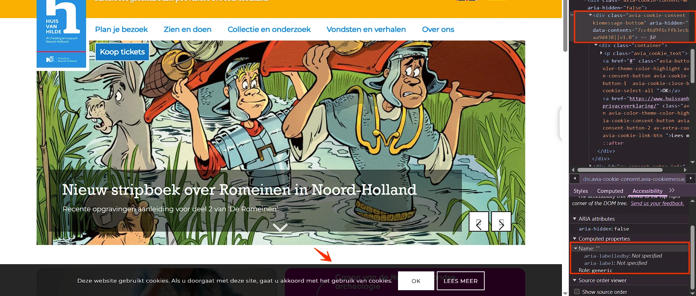
Op alle pagina’s is er een dialoogvenster met cookies. Dit dialoogvenster mist zowel de juiste ARIA-rol als een toegankelijke naam. Schermlezers kunnen hierdoor niet doorgeven dat het om een dialoogvenster gaat, en wat de inhoud ervan is.
#### Oplossing:
Voeg twee attributen toe aan het dialoogvenster: een `aria-label` met een duidelijke beschrijving van de inhoud (`aria-label="Beschrijving van de inhoud"`) en `role="dialog"`.
### Cookiebanner krijgt niet als eerste toetsenbordfocus
Impact: GrootType: TechniekWCAG: 2.4.3
Wanneer een bezoeker de website voor het eerst bezoekt, verschijnt er een cookiebanner. Deze banner krijgt echter niet als eerste de toetsenbordfocus, terwijl dat wel zou moeten. De banner bedekt de paginainhoud, en als de toetsenbordfocus niet eerst daarheen gaat, kunnen bezoekers die alleen met het toetsenbord navigeren het bericht niet sluiten. Om deze banner te sluiten, moet de bezoeker helemaal naar de onderkant van de pagina tabben.
Oplossing:
Zorg dat de focus als eerste naar de cookiebanner gaat.
#2 - Focus niet meer zichtbaar omdat cookiebanner deel van pagina bedekt
Impact: GrootType: TechniekWCAG: 2.4.11
De toetsenbordfocus komt terecht op elementen die verborgen liggen onder de cookiebanner. Hierdoor is het onmogelijk te zien waar de focus zich bevindt.
Oplossing:
Zorg ervoor dat de cookiebanner meeschaalt bij inzoomen, zodat de focus zichtbaar is.
#3 - Toetsenbordfocus is niet zichtbaar
Impact: GrootType: TechniekWCAG: 2.4.7
Op alle pagina’s is de toetsenbordfocus niet zichtbaar op bijna alle elementen van de website, bijvoorbeeld: het logo, het hoofdmenu, de submenu’s, links in de footer, links en knoppen op de pagina en andere. De toetsenbordfocus moet altijd zichtbaar zijn op interactieve elementen zoals links, knoppen en invoervelden die met het toetsenbord focus kunnen krijgen. Bezoekers die met het toetsenbord navigeren moeten goed kunnen zien op welke plek op de pagina ze zijn. Anders weten ze niet op welk moment ze op Enter moeten drukken om een knop of link te bedienen.
Oplossing:
Zorg dat de toetsenbordfocus zichtbaar is op de genoemde elementen.
#4 - Tekstalternatief van logo is niet voldoende
Impact: MediumType: TechniekWCAG: 1.1.1, 2.5.3
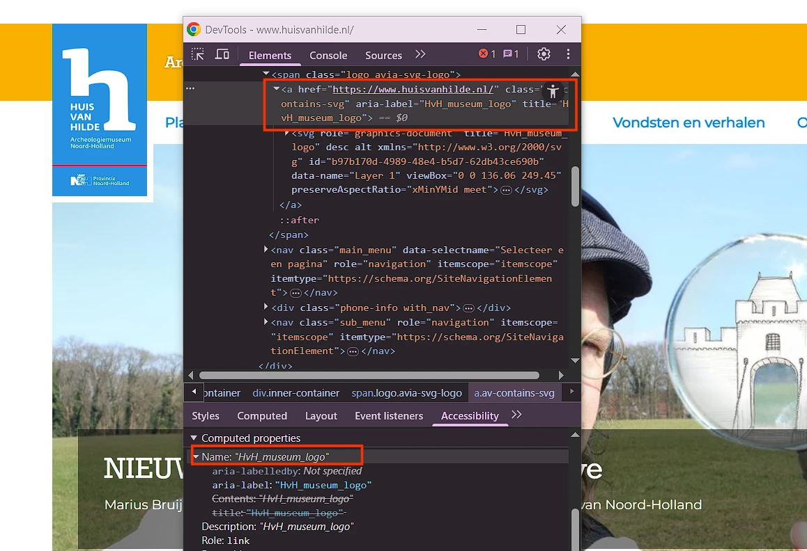
Het logo bovenaan de website toont de volledige tekst “Huis van Hilde Archeologiemuseum Noord-Holland”, maar de alt-tekst is alleen “HvH_museum_logo”. In het tekstalternatief staat dus niet alle tekst die in het logo te zien is. Dit moet wel. Zo weten bezoekers die het plaatje niet kunnen zien, ook precies wat er staat.
Dit probleem hangt ook samen met SC 2.5.3, omdat bezoekers bij dit element nu geen spraakbesturing kunnen gebruiken.
#### Oplossing:
Verander de `alt`-tekst zodat de volledige tekst van het logo erin staat: “Huis van Hilde Archeologiemuseum Noord-Holland”.
### Kleurcontrast van tekst is te laag
Impact: MediumType: ContentWCAG: 1.4.3
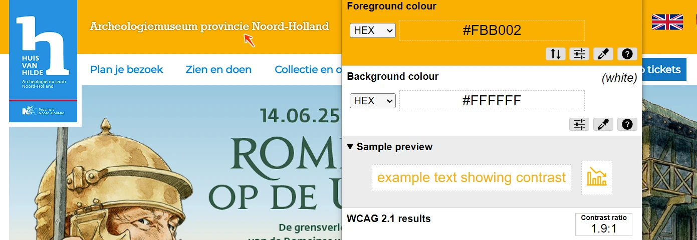
Op alle pagina’s staat witte tekst op een oranje achtergrond (`#FBB002`) of omgekeerd, bijvoorbeeld in de header bij de kop “Archeologiemuseum provincie Noord-Holland” en andere. De contrastverhouding is te laag: 1,9:1.
Hetzelfde probleem doet zich voor bij witte tekst op een lichtgele achtergrond (`#F9BD33`) of omgekeerd. De contrastverhouding is te laag: 1,7:1. Bijvoorbeeld op de homepage, onder de kop “Huis van Hilde – altijd wat te beleven!”, bij de tekst “Nieuwe tentoonstelling Romeinen op de uitkijk” en andere.
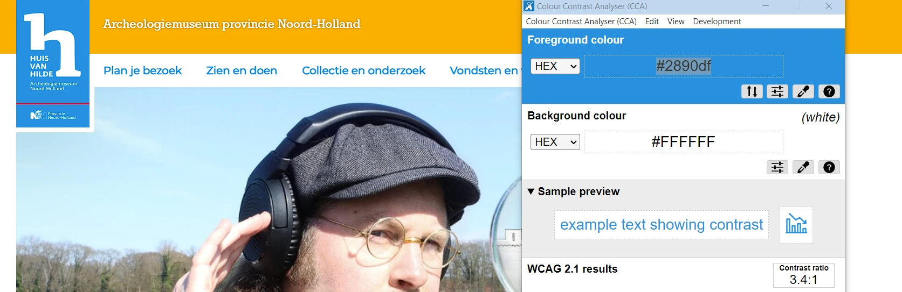
Op alle pagina’s staat witte tekst op een lichtblauwe achtergrond (`#2890DF`) of omgekeerd, bijvoorbeeld in het hoofdmenu bij de link “Plan je bezoek”. De contrastverhouding is te laag: 3,4:1.
Op alle pagina’s staat er oranje tekst (`#FBB002`) op een lichtblauwe achtergrond (`#2890DF`), bijvoorbeeld bij “Tijden en prijzen” in de footer. De contrastverhouding is te laag: 1,8:1.
Hetzelfde probleem doet zich voor bij links in het submenu en bij de links “Nieuws” en “Contact” wanneer deze de toetsenbordfocus krijgen.
Tekst van informatieve elementen zoals links en knoppen moet altijd voldoende contrast hebben, ook als het element toetsenbord focus krijgt of als de bezoeker met de muiscursor over het element beweegt (hover).
#### Oplossing:
Voor tekst kleiner dan 24px en niet vetgedrukt moet het contrast minimaal 4,5:1 zijn, en voor tekst groter dan 24px moet het contrast minimaal 3,0:1 zijn. Op deze pagina staat een instructie die uitlegt hoe je kleurcontrast kan testen: https://properaccess.nl/hoe-test-ik-kleurcontrast/.
### Informatieve elementen zijn verborgen voor hulpsoftware
Impact: MediumType: TechniekWCAG: 1.3.1
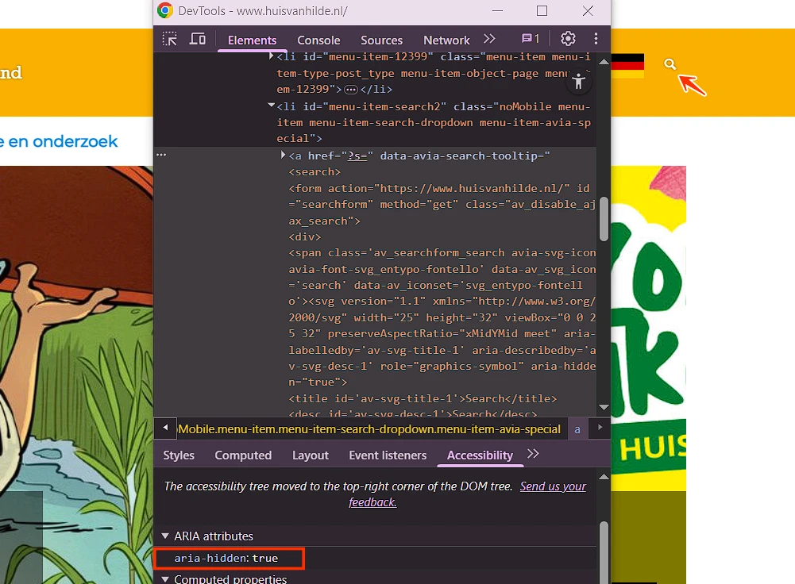
Op alle pagina’s staat in de header een knop met een vergrootglaspictogram die een zoekveld opent. Deze knop heeft aria-hidden="true". Het attribuut `aria-hidden="true"` zorgt ervoor dat inhoud verborgen wordt voor schermlezers. Gebruik dit daarom niet bij informatieve of interactieve elementen.
#### Oplossing:
Verwijder het attribuut `aria-hidden=”true”`.
### Kleurcontrast van informatieve iconen is niet voldoende
Impact: MediumType: TechniekWCAG: 1.4.11
Op alle pagina’s staat in de header een knop met een vergrootglaspictogram dat onvoldoende kleurcontrast heeft. Het witte pictogram tegen de oranje achtergrond (#FBB002) heeft een contrastverhouding van 1,9:1, wat lager is dan de vereiste 3,0:1 voor grafische elementen die informatie overbrengen of interactief zijn. Het kleurcontrast van informatieve iconen moet minimaal 3,0:1 zijn.
Oplossing:
Zorg dat het icoon voldoende contrast met de achtergrond heeft.
#5 - Content die verschijnt bij hover moet makkelijk gesloten kunnen worden
Impact: MediumType: TechniekWCAG: 1.4.13
Het hoofdmenu heeft items met submenu’s. Wanneer een bezoeker met de muis over deze items gaat, verschijnt het submenu. Deze submenu’s overlappen de inhoud van de pagina, maar zijn niet te sluiten zonder dat de muis of toetsenbordfocus verplaatst wordt. Hiermee voldoen deze elementen niet aan de eisen voor dit succescriterium.
Oplossing:
De bezoeker moet deze extra content makkelijk kunnen sluiten zonder de muis te gebruiken of de toetsenbordfocus te verplaatsen. Bijvoorbeeld door de Escape-toets in te drukken. Zo kan de bezoeker snel de extra informatie verbergen en doorgaan met de belangrijkste onderdelen van de pagina.
#6 - Kop is niet gemarkeerd als koptekst
Impact: MediumType: TechniekWCAG: 1.3.1
Op alle pagina’s zijn de volgende teksten in de footer niet als koppen opgemaakt: “Volg ons:”, “Telefoon balie:”, “Bezoekadres:”, “Openingstijden:” en “Uitzonderingen:”.
Bezoekers die hulpsoftware gebruiken hebben niets aan een (tussen)kop die er wel uitziet als kop, maar niet als kop is gemarkeerd. Via de koppen op een pagina kunnen gebruikers van hulpsoftware de inhoud scannen of snel naar een bepaalde sectie springen. Maar dat kan alleen als de kop ook echt in de code staat. Als koppen alleen visueel als kop zijn vormgegeven (bijvoorbeeld vetgedrukt), ontstaat bovendien nog een ander probleem: de structuur van de informatie in de code wijkt dan af van de visuele structuur. Op deze pagina staat een instructie hoe zelf koppen op een webpagina kan testen: https://properaccess.nl/zo-controleer-je-de-koppenstructuur-van-je-website/.
Oplossing:
Dit voorkom je door koppen altijd te markeren met het juiste HTML-element, op het juiste kopniveau: h1, h2, h3, h4, h5 of h6. Meestal kun je het kopniveau kiezen via de content-editor in je CMS. De HTML-code voor de kop wordt dan automatisch toegepast.
#7 - Relatie tussen links in een groep is niet in HTML vastgelegd
Impact: MediumType: TechniekWCAG: 1.3.1
Op alle pagina’s staat in de footer onder de tekst “Volg ons:” een groep sociale-media-links die visueel als groep worden weergegeven, maar deze groepering is niet terug te zien in de HTML-structuur.
Als het voor een ziende bezoeker duidelijk is dat een groep links bij elkaar hoort, dan moet die structuur ook in de HTML-code aanwezig zijn.
Op alle pagina’s staat in de footer onder de tekst “Volg ons:” een groep sociale-media-links. De logo’s van deze sociale-media-links zijn geplaatst met het pseudo-element ::before. Deze logo’s hebben geen alternatieve tekst.
Informatieve afbeeldingen zoals een logo moeten altijd een alt-tekst hebben. In die alt-tekst moet de volledige tekst staan die in het logo te zien is. Zo weten bezoekers die het plaatje niet kunnen zien ook wat er staat.
Dit probleem hangt ook samen met SC 4.1.2, omdat deze links geen toegankelijke namen hebben, en met SC 2.4.4, omdat deze links geen doel hebben.
#### Oplossing:
Om deze links toegankelijk te maken, moet de afbeelding een tekstalternatief krijgen dat het linkdoel beschrijft.
### Logo heeft geen `alt`-attribuut
Op alle pagina’s ontbreekt bij het logo “NH Provincie Noord-Holland” in de footer, dat met een img-element is geïmplementeerd, het alt-attribuut.
Informatieve afbeeldingen zoals een logo moeten altijd een alt-tekst hebben. In die alt-tekst moet de volledige tekst staan die in het logo te zien is. Zo weten bezoekers die het plaatje niet kunnen zien ook wat er staat. Bovendien heeft elke afbeelding die geplaatst wordt met een img-element een alt-attribuut nodig.
Dit probleem hangt ook samen met SC 4.1.2, omdat deze link geen toegankelijke naam heeft; met SC 2.4.4, omdat deze link geen doel heeft; en met SC 2.5.3, omdat bezoekers geen spraakbesturing kunnen gebruiken om de link te bedienen.
Oplossing:
Voeg een alt-attribuut toe aan de link met daarin een alt-tekst die de volledige tekst van het logo bevat.
#9 - Menuitem-elementen staan niet binnen vereiste overkoepelende rol
Impact: MediumType: TechniekWCAG: 1.3.1
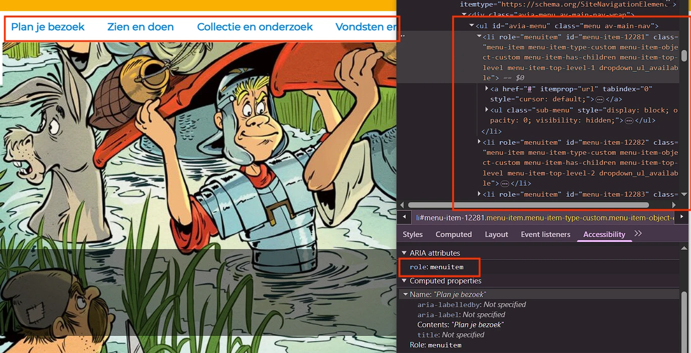
Op alle pagina’s bevinden de links van het hoofdmenu zich in menuitem-elementen. Hierbij heeft het bovenliggende element niet de juiste rol.
De huidige situatie zorgt ervoor dat hulpsoftware er juist minder goed mee overweg kan. Elementen met de rol `menuitem` moeten binnen een overkoepelende rol staan, zoals `menu`, `menubar` of `group`. En deze rol ontbreekt. Bovendien hoort bij deze ARIA-rollen een andere toetsenbordbediening. Die kun je toevoegen, maar dan moeten je ook de juiste toetsenbordfuncties instellen. Voor dit eenvoudige menu is dit allemaal niet nodig.
#### Oplossing:
Je kunt `role="menubar"` en `role="menuitem"` beter achterwege laten. Die zijn bedoeld voor andere, meer complexe toepassingen en niet voor een standaard menu op een website. Een betere oplossing is om hier gewoon een geneste lijst (ul) te gebruiken. Op https://www.w3.org/WAI/ARIA/apg/patterns/menu/ staat wat er nodig is om een toepassing met `role="menubar"` te bouwen.
### Het lijst-element bevat elementen die niet zijn toegestaan
Impact: MediumType: TechniekWCAG: 1.3.1
Op alle pagina’s bevindt het hoofdmenu zich in een lijst (ul-element). Het lijst-element bevat echter elementen die niet zijn toegestaan, namelijk de li-elementen met role="menuitem". Een ul-element mag alleen li-elementen bevatten. Door het gebruik van role="menuitem" wordt de rol die het li-element heeft echter overschreven, waardoor het nu niet aan die eis voldoet.
Meer over lijsten en waarom ze belangrijk zijn lees je op deze pagina https://properaccess.nl/waarom-correcte-html-lijsten-het-verschil-maken-in-toegankelijkheid/.
Oplossing:
Zorg dat alle lijsten op de juiste manier in de code zijn gemarkeerd. In deze situatie kan de rol van “menuitem” beter verwijderd worden.
#10 - Staat van submenu niet doorgegeven aan schermlezer
Impact: GrootType: TechniekWCAG: 4.1.2
Op alle pagina’s hebben de hoofdmenulinks een submenu, maar een blinde bezoeker krijgt geen informatie over of het submenu geopend of gesloten is. Als er een link is die een submenu kan tonen of verbergen, dan moet hulpsoftware de staat van dat submenu (zichtbaar of verborgen) kunnen bepalen.
Op een klein scherm verschijnt er een menulink om het mobiele navigatiemenu te openen. Deze link geeft geen informatie over de staat van het menu (open of gesloten) aan bezoekers die dit niet kunnen zien, zoals mensen die een schermlezer gebruiken.
Oplossing:
Voeg bijvoorbeeld een tekstuele uitleg toe (ingeklapt/uitgeklapt) die je voor ziende bezoekers met CSS verbergt. Of gebruik het aria-expanded-attribuut op de link van het mobiele menu. Dit attribuut moet de waarde "true" krijgen als het menu getoond wordt, en “false" als het menu verborgen is.
#11 - Mobiel menu werkt niet goed met toetsenbordfocus
Impact: GrootType: TechniekWCAG: 2.4.3
Op een klein scherm staat de menulink bovenaan de pagina, te herkennen aan het icoon met drie liggende streepjes. Deze link opent een mobiel menu. Op dit moment kunnen bezoekers met het toetsenbord uit het mobiele menu navigeren. De toetsenbordfocus verplaatst zich dan naar de onderliggende pagina terwijl het menu open blijft staan.
Bij dit soort menu’s moet de toetsenbordfocus goed worden ingesteld. Wanneer het menu actief is, moet de focus binnen het menu blijven en mag deze niet op de onderliggende pagina terechtkomen. Dit kan worden opgelost door de focus binnen het menu te houden, totdat de bezoeker op de sluitknop heeft geklikt of op de Esc-toets heeft gedrukt. Het is ook mogelijk om het menu automatisch te sluiten zodra de toetsenbordfocus eruit gaat.
Oplossing:
Zorg ervoor dat de focus in het menu blijft totdat de bezoeker dit sluit door op de sluitknop te klikken of de Esc-toets in te drukken. Je kunt het menu ook automatisch sluiten als de focus het menu verlaat.
#12 - Elementen die toetsenbordfocus krijgen vallen onder mobiel menu
Impact: GrootType: TechniekWCAG: 2.4.11
Wanneer de website op een klein scherm wordt bekeken met het mobiele menu open, overlapt het menu interactieve elementen op de onderliggende pagina. Deze onderliggende elementen kunnen nog steeds toetsenbordfocus krijgen, ook al worden ze door het menu verborgen.
Elementen die toetsenbordfocus krijgen, moeten altijd zichtbaar zijn. Is dat niet zo, dan kunnen bezoekers die met het toetsenbord of de schermlezer navigeren in de war raken.
Oplossing:
Je lost dit op een van de volgende manieren op:
Houd de focus binnen het menu: zorg dat de toetsenbordfocus binnen het menuvenster blijft totdat de bezoeker op de sluitknop heeft geklikt of op de Esc-toets heeft gedrukt.
Sluit het menuvenster automatisch: sluit het menuvenster automatisch op het moment dat de focus eruit gaat.
Het is cruciaal dat onderliggende interactieve elementen geen toetsenbordfocus krijgen zolang het mobiele menu open is.
#13 - Er is geen skiplink aanwezig
Impact: MediumType: TechniekWCAG: 2.4.1
Op alle pagina’s ontbreekt een skiplink.
Er moet een manier zijn om delen van een pagina over te slaan, zoals het navigatiemenu en andere elementen die op meerdere pagina’s terugkomen. Je gebruikt hier een skiplink voor. Daarmee kun je vaste blokken met herhalende inhoud overslaan. Een skiplink moet de eerste link op de pagina zijn. Deze link mag verborgen zijn, maar moet zichtbaar worden zodra hij focus krijgt.
Oplossing:
Voeg een skiplink toe waarmee bezoekers herhalende delen van de pagina over kunnen slaan.
Zorg dat de skiplink:
de eerste link op de pagina is;
visueel verborgen is, maar zichtbaar wordt bij toetsenbordfocus;
naar de hoofdcontent van de pagina springt als de bezoeker de link activeert.
Op deze pagina staat in de menubalk een logo van de Provincie Noord-Holland, dat ook een link is. Dit logo heeft geen tekstalternatief. Als het alt-attribuut van een afbeelding leeg is (alt=""), negeren schermlezers de afbeelding. Door de alt-tekst niet in te vullen, geef je eigenlijk aan: deze afbeelding is puur decoratief en geeft geen informatie. Er wordt dan dus niets voorgelezen. Daarom moet je informatieve afbeeldingen zoals een logo altijd een alt-tekst geven.
Dit probleem hangt ook samen met SC 4.1.2, omdat deze link geen toegankelijke naam heeft; met SC 2.4.4, omdat deze link geen doel heeft; en met SC 2.5.3, omdat bezoekers geen spraakbesturing kunnen gebruiken.
#### Oplossing:
Voeg een `alt`-tekst toe die de volledige tekst van het logo bevat. Doe dit ook voor het logo van Huis van Hilde op de eerste slide, inclusief de tekst “Archeologiemuseum Noord-Holland”.
### Bezoekers die inzoomen tot 200% (of 400%) kunnen niet meer alle functies gebruiken
Impact: GrootType: TechniekWCAG: 1.4.4, 1.4.10
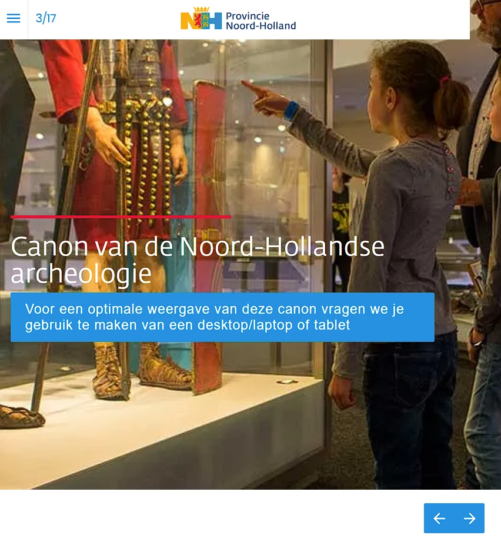
Wanneer de tekst op deze pagina wordt ingezoomd tot 200% (of 400%), verdwijnen de meeste functies en verschijnt de melding: “Voor een optimale weergave van deze canon vragen we je gebruik te maken van een desktop/laptop of tablet”.
#### Oplossing:
Zorg dat alles nog werkt als een bezoeker inzoomt tot 200% op een scherm van 1280 bij 1024 pixels of als de pagina wordt bekeken bij een breedte van 320 pixels.
### SC 1.1.1 Beschrijving van complexe afbeelding ontbreekt
Impact: MediumType: ContentWCAG: 1.1.1
Op deze pagina staat op dia 4, “Schoolbezoek,” onder de kop “Aanbod lesprogramma's” een complexe afbeelding zonder tekstalternatief.
Complexe afbeeldingen zoals infographics en schema’s bevatten veel informatie die niet binnen de 150 karakters van de alternatieve tekst past. Die informatie maak je toegankelijk door twee tekstalternatieven te bieden: een korte en een lange beschrijving.
Oplossing:
De korte beschrijving, meestal de alternatieve tekst, moet de locatie van de lange beschrijving aangeven. De lange beschrijving kun je als tekst op de pagina zelf plaatsen, maar deze mag ook op een andere pagina of in een downloadbaar bestand staan. In dit geval is het ook een optie om de afbeelding te vervangen door een HTML-tabel.
#15 - Video bevat tekst of logo’s waarvoor geen alternatief is
Impact: MediumType: ContentWCAG: 1.2.3, 1.2.5
Op deze pagina staan op dia 4, “Schoolbezoek,” onder de kop “Aanbod lesprogramma's” verschillende video’s, bijvoorbeeld “Huis van Hilde - super dicht bij station Castricum”. In deze video komt op verschillende momenten tekst voor (bijvoorbeeld rond 0:01 en 0:09). Er is echter geen media-alternatief of audiobeschrijving beschikbaar. Deze video bevat visuele informatie (tekst en logo’s) die ontoegankelijk is voor blinde gebruikers. Bezoekers die blind of slechtziend zijn, missen hierdoor informatie.
Hetzelfde probleem doet zich voor bij de andere video’s verderop. Dit probleem hangt ook samen met SC 1.2.5, omdat er geen audiobeschrijving aanwezig is.
Oplossing:
Dit kan voor dit succescriterium (1.2.3) worden opgelost met een geschreven tekst (media-alternatief), maar om aan succescriterium 1.2.5 te voldoen, moet een audiobeschrijving worden toegevoegd die de visuele elementen in de video beschrijft, zoals namen, functies, logo’s en teksten.
#16 - SC 1.2.2 De automatisch gegenereerde ondertiteling heeft fouten
Impact: MediumType: ContentWCAG: 1.2.2
Op deze pagina staan op dia 4, “Schoolbezoek,” onder de kop “Aanbod lesprogramma's” verschillende video’s, zoals “Leven in lagen animatie”. Deze video heeft een voice-over. Hoewel er ondertitels aanwezig zijn, zijn deze automatisch gegenereerd en daardoor onnauwkeurig.
Video’s waarin gesproken wordt, moeten altijd goede ondertiteling krijgen. Zo krijgen bezoekers die de video niet (goed) kunnen horen ook alle informatie. Deze ondertiteling moet exact hetzelfde zijn als wat wordt gezegd. De automatisch gegenereerde ondertiteling voldoet hier niet aan, omdat er punctuatie ontbreekt en er fouten in kunnen zitten.
Oplossing:
Zorg dat de ondertiteling van hoge kwaliteit is en exact weergeeft wat wordt gezegd in de video.
#17 - Koptekst is onduidelijk
Impact: MediumType: ContentWCAG: 2.4.6
Op deze pagina staan op dia 5, “Inhoud,” koppen met betekenisloze tekst: “01”, “02”, “03”.
Zo’n soort kop geeft dus geen extra informatie of context. Dat is vooral voor bezoekers die schermlezers gebruiken een probleem. Zij laten de koppen voorlezen om snel de structuur van een pagina te begrijpen, en de inhoud te vinden die voor hen relevant is.
Oplossing:
Gebruik een meer specifieke kop, die duidelijk maakt wat voor soort inhoud of functionaliteit erna komt.
#18 - Alternatieve tekst van een informatieve afbeelding is leeg
Impact: MediumType: ContentWCAG: 1.1.1
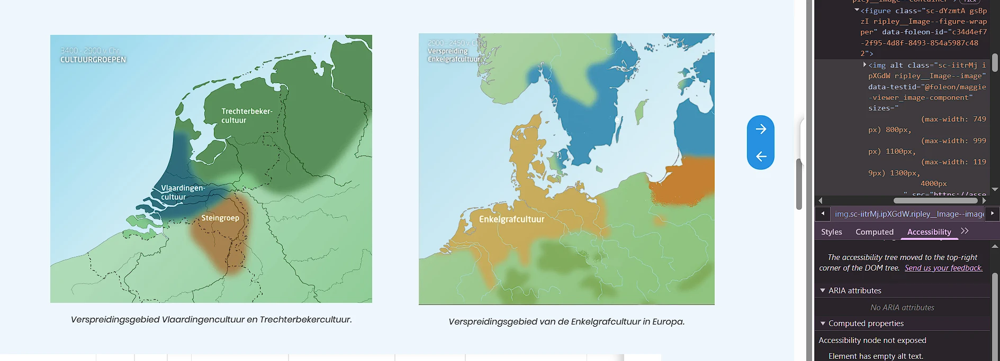
Op deze pagina staan op dia 6, “5300-2000 BC,” onder de kop “Bewoners” twee informatieve afbeeldingen met een leeg alt-attribuut. Afbeeldingen die informatie overdragen moeten een tekstalternatief hebben. De alternatieve tekst mag dus niet leeg zijn. Alleen dan kan een schermlezer de informatie uit de afbeelding overbrengen aan een blinde bezoeker.
Hetzelfde probleem doet zich voor op dia’s 7, 8, 9 en verder.
#### Oplossing:
Voeg een beschrijvende alternatieve tekst toe aan het `alt`-attribuut.
### Alleen kleur gebruikt in legenda
Impact: MediumType: ContentWCAG: 1.4.1
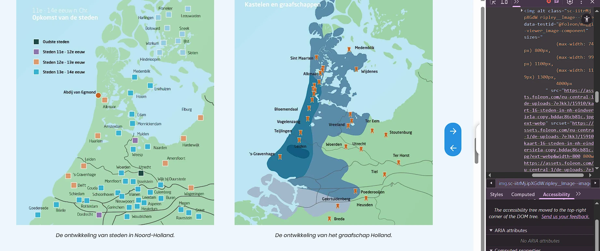
Op deze pagina wordt op dia 11, “1000–1500,” onder de kop “Bewoners” alleen kleur gebruikt in de legenda om informatie over te brengen. Zie het oranje in de afbeelding.
Alleen als je de kleuren kunt zien en van elkaar kunt onderscheiden zie je welke balk / lijn bij welke categorie in de legenda hoort.
#### Oplossing:
Gebruik naast kleur bijvoorbeeld ook verschillende soorten arcering.
### Kleurcontrast tussen lijnen of balken in legenda is niet voldoende
Impact: MediumType: ContentWCAG: 1.4.11
Op deze pagina staat op dia 11, “1000–1500,” onder de kop “Bewoners” een legenda met kleuren. De kleuren hebben een laag contrast, bijvoorbeeld lichtblauw (#39B3D2) op een witte achtergrond (#F6F5F0) – 2,3:1; oranje (#DE966B) op een witte achtergrond (#F6F5F0) – 2,2:1; en andere.
Oplossing:
Zorg dat het contrast tussen informatieve elementen van een legenda minimaal 3,0:1 is, zodat bezoekers ze van elkaar kunnen onderscheiden. Controleer of alle kleuren in de legenda voldoende contrast hebben.
#19 - Kop is niet gemarkeerd als koptekst
Impact: MediumType: ContentWCAG: 1.3.1
Op deze pagina is op dia 17, “Colofon,” de volgende tekst niet als kop opgemaakt: “Redactie,” “Beeld” en andere.
Bezoekers die hulpsoftware gebruiken hebben niets aan een (tussen)kop die er wel uitziet als kop, maar niet als kop is gemarkeerd. Via de koppen op een pagina kunnen gebruikers van hulpsoftware de inhoud scannen of snel naar een bepaalde sectie springen. Maar dat kan alleen als de kop ook echt in de code staat. Als koppen alleen visueel als kop zijn vormgegeven (bijvoorbeeld vetgedrukt), ontstaat bovendien nog een ander probleem: de structuur van de informatie in de code wijkt dan af van de visuele structuur. Op deze pagina staat een instructie hoe zelf koppen op een webpagina kan testen: https://properaccess.nl/zo-controleer-je-de-koppenstructuur-van-je-website/.
Oplossing:
Dit voorkom je door koppen altijd te markeren met het juiste HTML-element, op het juiste kopniveau: h1, h2, h3, h4, h5 of h6. Meestal kun je het kopniveau kiezen via de content-editor in je CMS. De HTML-code voor de kop wordt dan automatisch toegepast.
#20 - Het aantal dia’s en de huidige dia worden niet automatisch voorgelezen door schermlezers
Impact: MediumType: TechniekWCAG: 4.1.3
Op deze pagina staat onderaan informatie over het aantal dia’s en welke dia momenteel wordt weergegeven, bijvoorbeeld “1/17”. Deze telling is een statusbericht dat automatisch door schermlezers moet worden voorgelezen wanneer het verandert. De benodigde code om deze functionaliteit mogelijk te maken ontbreekt echter.
Oplossing:
Statusberichten moeten automatisch voorgelezen worden door schermlezers zodra ze verschijnen of veranderen. Dit bereik je door aria-live-attribute aan de melding toe te voegen. Zorg dat de tekst duidelijk is, bijvoorbeeld “dia X van 17”.
Deze pagina bevat iframes met audiopodcasts zonder een title-attribuut.
Iframes moeten een goede beschrijving hebben. Die staat meestal in het `title`-attribuut van het iframe. Er moet in staan welk *type* inhoud het is (bijvoorbeeld een podcast of video), en waar het inhoudelijk over gaat. Deze beschrijving van de inhoud moet uniek en betekenisvol zijn. Door de beschrijving kunnen bezoekers met hulpsoftware beslissen of het de moeite waard is om de inhoud van het iframe te verkennen.
#### Oplossing:
Voeg het `title`-attribuut aan het `iframe`-element toe, en zet daar een tekst in waaruit blijkt welk *type* inhoud het iframe bevat, en waar het inhoudelijk over gaat.
### Er is een podcast zonder transcript
Impact: MediumType: ContentWCAG: 1.2.1
Deze pagina bevat podcasts zonder transcript.
Er moet een alternatief zijn voor mensen die het geluid niet kunnen horen: de volledig uitgeschreven tekst (transcriptie). Dit is bijvoorbeeld belangrijk voor mensen die doof of slechthorend zijn.
Oplossing:
Deze tekst kun je op verschillende manieren toevoegen. Eén manier is om de tekst direct bij de podcasts te zetten, eventueel visueel verborgen, waarbij de bezoeker de tekst met een link zichtbaar kan maken. De tekst mag ook op een aparte pagina of in een toegankelijke pdf staan, als de link naar de pagina of pdf direct bij de podcast staat.
#22 - Toegankelijke namen zijn in het Engels geschreven
Impact: KleinType: TechniekWCAG: 3.1.2
Op deze pagina staan verschillende podcasts in spelers in iframe-elementen. De toegankelijke knopnamen van deze spelers zijn in het Engels, bijvoorbeeld “Share”, “10 seconds back” en andere.
Deze namen worden voorgelezen door schermlezers volgens de uitspraakregels van de primaire taal van de pagina (in dit geval Nederlands).
Oplossing:
Vertaal de teksten naar het Nederlands, zodat ze correct worden uitgesproken door schermlezers.
img-element heeft geen alt-attribuut
Impact: MediumType: TechiekWCAG: 1.1.1
Op deze pagina staan podcastspelers met daarin afbeeldingen. Deze afbeeldingen zijn toegevoegd met een img-element, maar het alt-attribuut ontbreekt.
Een img-element moet altijd een alt-attribuut hebben. Bij een decoratieve afbeelding die geen betekenis overdraagt, laat je dit attribuut leeg. Dan staat er alt="". Bij een informatieve afbeelding voeg je een duidelijke beschrijving van de afbeelding toe.
Oplossing:
Voeg het alt-attribuut toe aan het img-element. Bij een decoratieve afbeelding laat je de waarde leeg, bij een informatieve afbeelding voeg je een duidelijke alternatieve tekst toe.
#23 - Website werkt niet meer goed of is niet meer leesbaar als tekstafstand wordt aangepast
Impact: MediumType: TechniekWCAG: 1.4.12
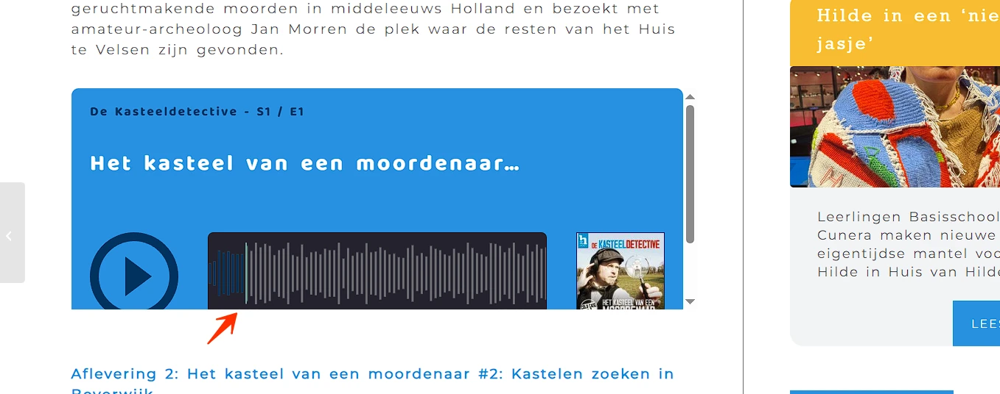
Op deze pagina gaan, wanneer bezoekers tekstafstanden toepassen zoals beschreven in dit succescriterium, sommige functies van de podcastspeler verloren, bijvoorbeeld de knop “Share” en andere.
Sommige bezoekers passen de weergave van de tekst aan, zodat zij de tekst beter kunnen lezen. Denk aan het vergroten van de afstand tussen regels, letters of woorden. Het gaat bijvoorbeeld om mensen met dyslexie. Als een bezoeker dit doet op de manier die in succescriterium 1.4.12 is beschreven, moet alles goed blijven werken. Bovendien moet de tekst leesbaar blijven.
#### Oplossing:
Je lost dit op door de hoogte en breedte van de containers van de tekst responsief te maken.
### Tooltip kan niet met de Esc-toets gesloten worden
Impact: MediumType: TechniekWCAG: 1.4.13
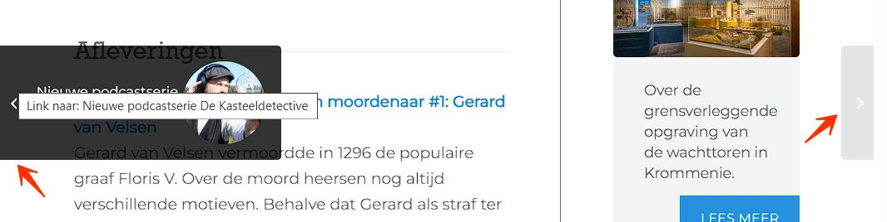
Op deze pagina staan links met pijlpictogrammen. Wanneer een bezoeker met de muis over dit pictogram gaat, verschijnt er nieuwe inhoud. Het is niet mogelijk om de tooltip te sluiten met de Esc-toets.
#### Oplossing:
Zorg dat bezoekers de tooltip met de Esc-toets kunnen sluiten.
### Kleurcontrast van informatieve iconen is niet voldoende
Impact: MediumType: TechniekWCAG: 1.4.11
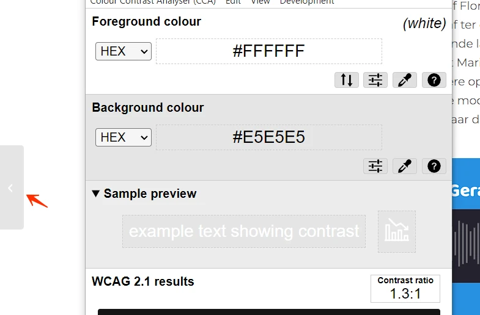
Op deze pagina staan links met pijlpictogrammen met onvoldoende kleurcontrast. De witte pictogrammen tegen de grijze achtergrond (`#E5E5E5`) hebben een contrastverhouding van 1,3:1, wat lager is dan de vereiste 3,0:1 voor grafische elementen die informatie overbrengen. Het kleurcontrast van informatieve iconen moet minimaal 3,0:1 zijn.
#### Oplossing:
Zorg dat de iconen voldoende contrast hebben.
Op deze pagina zijn de volgende teksten onjuist opgemaakt met strong in plaats van met echte kop-elementen: “Postadres:”, “Contactgegevens:” en andere. Het strong-element is niet bedoeld om koppen mee te markeren. Daarvoor moet je altijd een kop-element gebruiken, zoals h2. Koppen gebruik je om een tekst te structureren. Alleen als je ze als kop markeert met een kop-element, begrijpt hulpsoftware die betekenis. Het strong-element gebruik je wel als je nadruk wilt geven aan enkele woorden of een zinsdeel.
Hetzelfde probleem doet zich voor op de pagina Zomervakantie bij Huis van Hilde, bijvoorbeeld bij “Themaweken”; op de pagina Cold Case: verhalen over de verdwenen kastelen van Noord-Holland, bijvoorbeeld bij “Aflevering 1: Het kasteel van een moordenaar #1: Gerard van Velsen”; op de pagina Provincie Noord-Holland – Huis van Hilde, bijvoorbeeld bij “Wettelijke taak”; en op andere pagina’s.
Oplossing:
Verwijder het strong-element en gebruik de juiste kop-elementen om deze koppen te markeren, zoals h2 of h3.
#24 - SC 1.3.1 strong-element is gebruikt voor opmaak
Impact: KleinType: ContentWCAG: 1.3.1
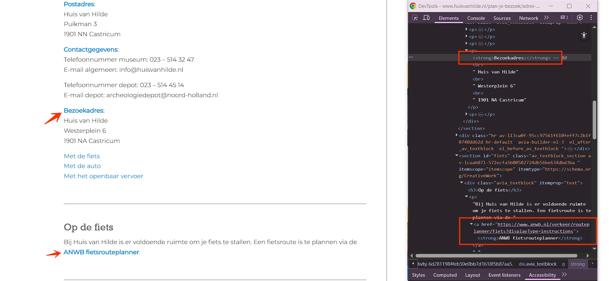
Op deze pagina is onder de kop “Op de fiets” het strong-element verkeerd gebruikt voor opmaakdoeleinden bij de link “ANWB fietsrouteplanner”. Het strong-element heeft een semantische waarde: het geeft een bepaalde betekenis aan de tekst die erin staat. Dit element geeft aan dat de tekst extra nadruk moet krijgen. Om die reden mag dit element niet gebruikt worden om alleen een visueel effect (vetgedrukte tekst) te bereiken.
Hetzelfde probleem doet zich voor op de pagina Provincie Noord-Holland – Huis van Hilde, bijvoorbeeld bij “Wettelijke taak provincie”, “Lees meer over het Cultuur en erfgoed-beleid van de provincie Noord-Holland” en andere.
#### Oplossing:
Verwijder de onnodige `strong`-elementen en gebruik CSS om de tekst vet te maken.
### Het type content in het iframe is niet beschreven in het `title`-attribuut
Impact: KleinType: ContentWCAG: 2.4.6
Op deze pagina staat onder de kop “Met het openbaar vervoer” een iframe met een video. Het title-attribuut "Huis van Hilde - super dicht bij station Castricum" beschrijft niet het type inhoud, bijvoorbeeld “YouTube-video”.
Iframes moeten een goede beschrijving hebben. Die zet je meestal in het title-attribuut van het iframe. Er moet in staan welk type inhoud het is (bijvoorbeeld een podcast of video), en waar het inhoudelijk over gaat. Deze beschrijving van de inhoud moet uniek en betekenisvol zijn. Door de beschrijving kunnen bezoekers met hulpsoftware beslissen of het de moeite waard is om de inhoud van het iframe te verkennen.
Oplossing:
Verander de tekst van het title-attribuut zodat duidelijk is welk type inhoud het iframe bevat, en waar het inhoudelijk over gaat.
#25 - De Youtube-video’s gebruiken letters als sneltoetsen
Impact: KleinType: ContentWCAG: 2.1.4
Op deze pagina staat een YouTube-videospeler die gebruikmaakt van sneltoetsen met één teken.
De Youtube-speler gebruikt sneltoetsen, zoals de ‘k' om de video te starten of stoppen en de 'm' om het geluid uit te zetten. Deze sneltoetsen botsen met schermlezers. Ze zijn namelijk ook actief als de toetsenbordfocus op een ander element in de videospeler staat. Dit kan problemen geven voor mensen die met spraakbediening werken, omdat deze letters soms in de uitgesproken woorden zitten. Ook voor mensen die per ongeluk een toets op het toetsenbord indrukken is het onhandig.
Oplossing:
Je lost dit op door de parameter disablekb=1 toe te voegen aan de URI van de video in de HTML-code. Hiermee schakel je de sneltoetsen uit, terwijl toetsenbordbediening mogelijk blijft. Bekijk voor meer informatie https://developers.google.com/youtube/player_parameters#disablekb (Engels).
#26 - Video bevat tekst of logo’s waarvoor geen alternatief is
Impact: MediumType: ContentWCAG: 1.2.3, 1.2.5
Op deze pagina staat onder de kop “Met het openbaar vervoer” een video. In deze video komt op verschillende momenten tekst voor (bijvoorbeeld rond 0:01 en 0:09). Er is echter geen media-alternatief of audiobeschrijving beschikbaar. Deze video bevat visuele informatie (tekst en logo’s) die ontoegankelijk is voor blinde gebruikers. Bezoekers die blind of slechtziend zijn, missen hierdoor informatie.
Dit probleem hangt ook samen met SC 1.2.5, omdat er geen audiobeschrijving aanwezig is.
Oplossing:
Dit kan voor dit succescriterium (1.2.3) worden opgelost met een geschreven tekst (media-alternatief), maar om aan succescriterium 1.2.5 te voldoen, moet een audiobeschrijving worden toegevoegd die de visuele elementen in de video beschrijft, zoals namen, functies, logo’s en teksten.
#27 - Er staan twee koppen van hetzelfde niveau direct onder elkaar
Impact: KleinType: ContentWCAG: 1.3.1
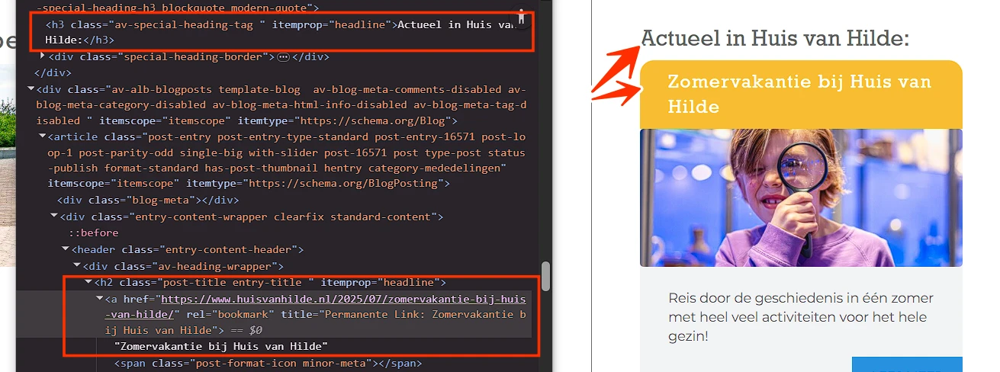
Op deze pagina volgt direct na een kop van niveau 3 een andere kop van een hoger niveau. Zie “Actueel in Huis van Hilde:” en “Zomervakantie bij Huis van Hilde”. Als twee koppen van hetzelfde niveau direct onder elkaar staan zonder inhoud ertussen, dan is één van de koppen niet op de juiste manier gebruikt. Direct onder het eerste h3-element mag een h4-element komen of andere content, maar niet opnieuw een h3-element of een h2-element.
Hetzelfde probleem doet zich voor op de pagina Zoekresultaten; op de pagina Toegankelijkheid; op de pagina Zomervakantie bij Huis van Hilde; en op andere pagina’s.
#### Oplossing:
Pas de tekst aan, zodat de kopregelniveaus de structuur van de tekst correct weergeven. Op deze pagina staat een instructie hoe zelf koppen op een webpagina kan testen: https://properaccess.nl/zo-controleer-je-de-koppenstructuur-van-je-website/.
#28 - Em-element is in plaats van kop-element gebruikt
Impact: MediumType: ContentWCAG: 1.3.1
Op deze pagina zijn de volgende teksten onjuist opgemaakt met em-elementen in plaats van met echte kop-elementen: “By bike”, “With public transport” en “By car”.
Het em-element is bedoeld om woorden extra nadruk te geven. Het heeft daarmee een andere semantische waarde dan een kop. Dit element moet dan ook niet gebruikt worden voor koppen.
Oplossing:
Verwijder de em-elementen en markeer de tussenkopjes als h3-koppen (of een ander geschikt kopregelniveau).
#29 - SC 3.1.2 Taalwisseling ontbreekt op anderstalige content
Impact: MediumType: ContentWCAG: 3.1.2
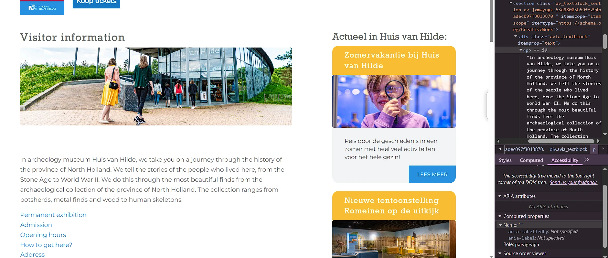
Op deze pagina staat het hoofdgedeelte van de inhoud in het Engels zonder taalcodering, bijvoorbeeld “Visitor information”.
Deze tekst wordt nu voorgelezen volgens de uitspraakregels van de primaire taal van de pagina. Die is ingesteld in het `lang`-attribuut op het `html`-element, in dit geval op “nl”. De schermlezer zou juist op de taal van de zin moeten overschakelen. Dat bereik je door deze anderstalige inhoud een lokaal `lang`-attribuut te geven met de juiste waarde.
#### Oplossing:
Voeg een `lang`-attribuut met de juiste taalcode toe aan het `html`-element dat de tekst in een andere taal bevat. Als de tekst bijvoorbeeld in het Engels is, voeg je `lang="en"` toe aan het element.
### Decoratieve afbeelding is niet verborgen voor schermlezers
Impact: MediumType: ContentWCAG: 1.1.1
Op deze pagina staat onder de kop “Visitor information” een decoratieve afbeelding. Het tekstalternatief daarvan is “luz4879_22-05-22_lr_52094525236_o”, via het title-attribuut.
Een decoratieve afbeelding geeft geen extra informatie en moet daarom verborgen worden voor schermlezers.
Oplossing:
Je kunt bereiken door het alt-attribuut leeg te laten (alt=””).
#30 - SC 1.4.3 Kleurcontrast van tekst is niet voldoende bij toetsenbordfocus en/of als de muiscursor erover beweegt
Impact: MediumType: TechniekWCAG: 1.4.3
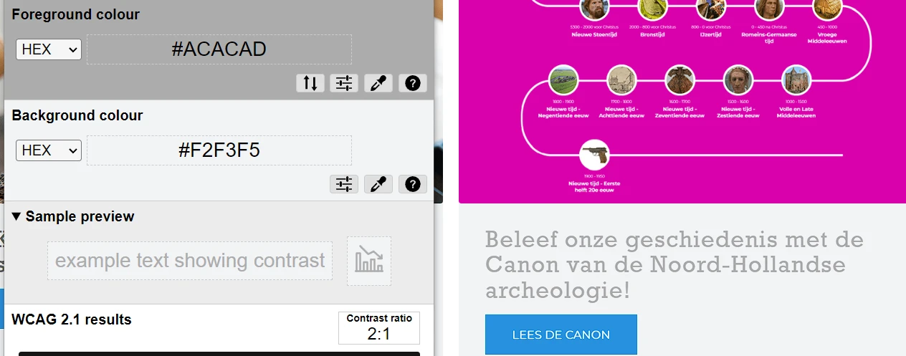
Op deze pagina verandert de tekst van de link “Beleef onze geschiedenis met de Canon van de Noord-Hollandse archeologie!” naar lichtgrijs (`#ACACAD`) op een grijze achtergrond (`#F2F3F5`) wanneer deze link de toetsenbordfocus krijgt. De contrastverhouding van deze tekst is 2,0:1.
Tekst van informatieve elementen zoals links en knoppen moet altijd voldoende contrast hebben, ook als het element toetsenbord focus krijgt of als de bezoeker met de muiscursor over het element beweegt (hover).
#### Oplossing:
Zorg dat de tekst ook als de muis eroverheen gaat minimaal een contrast van 3,0:1 heeft met de achtergrond. Op deze pagina staat een instructie die uitlegt hoe je kleurcontrast kan testen: https://properaccess.nl/hoe-test-ik-kleurcontrast/.
### Bewegende content kan niet gestopt, gepauzeerd of verborgen worden
Impact: MediumType: TechniekWCAG: 2.2.2
Op deze pagina staat onder het hoofdmenu een carrousel die elke paar seconden een nieuwe afbeelding en tekst toont. Deze carrousel kan niet worden gestopt, gepauzeerd of verborgen.
Bewegende content kan storend zijn voor mensen met een cognitieve beperking. De bewegende inhoud zorgt voortdurend voor afleiding terwijl ze de tekst op de pagina proberen te lezen.
Oplossing:
Zorg dat er een manier is waarmee bezoekers beweging kunnen stoppen, pauzeren of verbergen. Dit geldt voor alle bewegende, knipperende, scrollende of automatisch actualiserende content die tegelijk met andere informatie wordt getoond, automatisch start en langer dan 5 seconden speelt.
#31 - Alternatieve tekst van informatieve afbeelding is niet betekenisvol
Impact: MediumType: ContentWCAG: 1.1.1
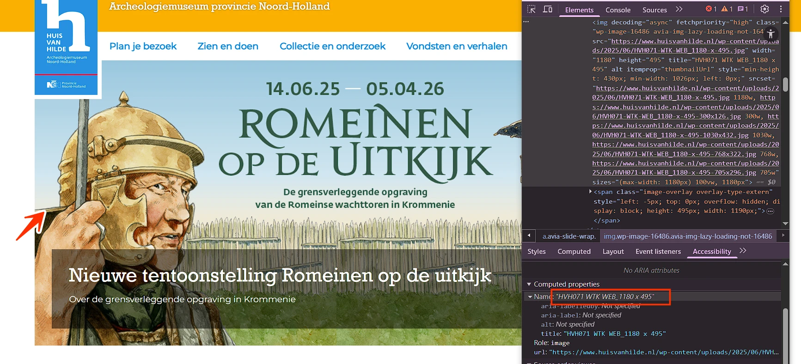
Op deze pagina staat onder het hoofdmenu een carrousel. Naast de kop “Nieuwe tentoonstelling Romeinen op de uitkijk” staat een informatieve afbeelding met de alternatieve tekst "HVH071 WTK WEB_1180 x 495". Deze tekst beschrijft de afbeelding onvoldoende. Hetzelfde probleem doet zich verderop voor, boven de kop “Kindvriendelijk museum”, met het tekstalternatief “65A8715”. Deze tekstalternatieven worden hier toegevoegd via het title-attribuut.
Afbeeldingen die informatie overdragen moeten een betekenisvolle alternatieve tekst hebben, waarin de belangrijke informatie uit de afbeelding wordt beschreven.
Hetzelfde probleem doet zich voor op de pagina Contact, onder de kop “Contact en bereikbaarheid”, met de alt-tekst “luz4879_22-05-22_lr_52094525236_o”.
#### Oplossing:
Voeg een beschrijvende alternatieve tekst toe aan het `alt`-attribuut. Om herhaling te voorkomen mag deze alternatieve tekst niet gelijk zijn aan tekst die al op de pagina staat, bijvoorbeeld als onderschrift van de afbeelding.
### Onvoldoende linktekst
Impact: MediumType: ContentWCAG: 2.4.4
Op deze pagina staat onder het hoofdmenu een carrousel. Deze carrousel bevat links met pijlpictogrammen. Hun toegankelijke namen, “Volgende Volgende” en “Vorige Vorige”, beschrijven het doel van de links niet voldoende. Bezoekers die schermlezers gebruiken begrijpen daardoor niet altijd dat dit links zijn naar de volgende of vorige dia’s.
Oplossing:
Je verbetert dit door de linkteksten aan te vullen met het (visueel verborgen) woord "slide”.
#32 - Onlogische leesvolgorde van artikelen
Impact: MediumType: TechniekWCAG: 1.3.2
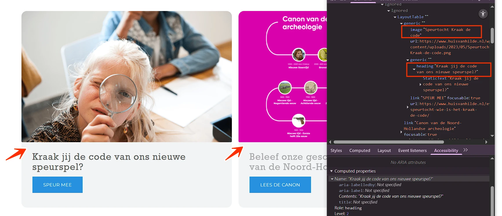
Op deze pagina staan onder de carrousel twee artikelen, bijvoorbeeld “Kraak jij de code van ons nieuwe speurspel?”. De volgorde van HTML-elementen binnen de artikelen is onjuist: afbeeldingen staan boven de koppen. De huidige volgorde is afbeelding, kop, link.
Als je deze artikelen van boven naar beneden laat voorlezen door een schermlezer, is niet duidelijk welke inhoud (afbeelding en/of tekst) bij welke kop hoort. Dat komt doordat de koppen niet bovenaan staan in de code van elk artikel. Dat kan verwarrend zijn voor bezoekers die een schermlezer gebruiken.
Hetzelfde probleem doet zich verderop voor, onder de kop “Instagram”.
#### Oplossing:
Je lost dit op door alle inhoud die bij een bepaalde kop hoort, in de code onder die kop te plaatsen. Dit zorgt voor een logische structuur. De visuele vormgeving mag wel afwijken.
### Er zijn links met dezelfde tekst maar een andere bestemming
Impact: MediumType: ContentWCAG: 2.4.4
Op deze pagina staan onder de kop “Huis van Hilde – altijd wat te beleven!” links met dezelfde tekst “LEES MEER”, maar met verschillende bestemmingen. Er zijn dus meerdere links aanwezig op de pagina met dezelfde linktekst maar een verschillend linkdoel. Dit kan verwarrend zijn voor bezoekers. Bovendien is het bij deze linktekst niet duidelijk waar de link naartoe gaat.
Hetzelfde probleem doet zich voor op de pagina Nieuws; op de pagina Zomervakantie bij Huis van Hilde; op de pagina Vondsten en verhalen; en op andere pagina’s.
Oplossing:
Zorg dat links met dezelfde tekst ook naar dezelfde bestemming leiden. Als het om een andere bestemming gaat, moet de linktekst ook anders zijn. Dit kan bijvoorbeeld opgelost worden door de linkteksten aan te passen of door een visueel verborgen tekst aan de ‘Lees meer’-links toe te voegen, die verwijst naar de titel van het nieuwsbericht.
#33 - Accordion heeft geen koppen of de rol van kop is overschreven
Impact: MediumType: TechniekWCAG: 1.3.1
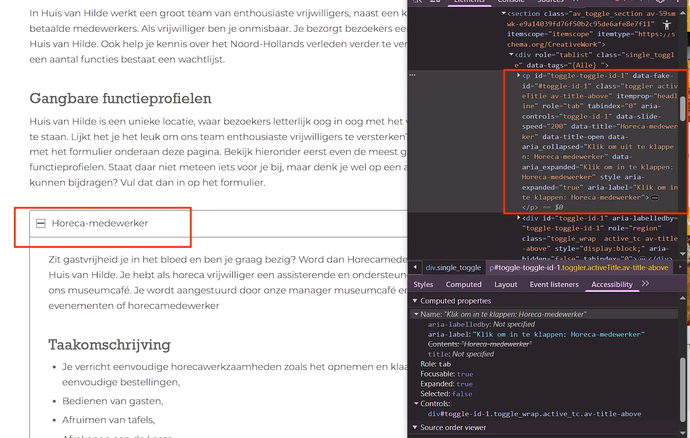
Op deze pagina staan onder de kop “Gangbare functieprofielen” verschillende uitklapbare elementen. Hierbij zijn de elementen die de verborgen inhoud openen en sluiten niet als kop gemarkeerd. De teksten waarmee je delen van een accordeon kunt in- en uitklappen, fungeren als koppen voor die delen. Daarom moeten deze teksten ook de rol van kop hebben. Het gaat verkeerd als deze teksten in de code niet als kop zijn gemarkeerd met een h-element zoals h2 of h3.
Hetzelfde probleem doet zich voor op de pagina Scholen.
#### Oplossing:
Markeer deze teksten als kop of zorg dat de bestaande rol van kop niet wordt overschreven.
Lees ook dit artikel over hoe toegankelijke accordions gebouwd kunnen worden: https://www.w3.org/WAI/ARIA/apg/patterns/accordion/.
### Accordion heeft niet de juiste rol
Impact: GrootType: TechniekWCAG: 4.1.2
Op deze pagina staan onder de kop “Gangbare functieprofielen” verschillende uitklapbare elementen. Deze hebben het aria-attribuut role=”tablist” meegekregen. Dit is hier niet de juiste rol. Een tablist is een patroon waarbij maar één tab tegelijkertijd getoond kan worden. Dit is hier niet het geval. Het gebruiken van de onjuiste rol kan misleidend of verwarrend zijn voor gebruikers van hulpsoftware.
Hetzelfde probleem doet zich voor op de pagina Scholen.
Oplossing:
Verwijder de onjuiste rol van tablist en tab op de betreffende elementen. Pas vervolgens de richtlijnen voor een toegankelijke accordion toe, zie het artikel op https://www.w3.org/WAI/ARIA/apg/patterns/accordion/.
#34 - Invoervelden voor persoonlijke gegevens hebben geen autocomplete-attribuut
Impact: KleinType: TechniekWCAG: 1.3.5
Op deze pagina staat onder de kop “Aanmelden” een formulier met invoervelden voor persoonlijke informatie (bijvoorbeeld achternaam, e-mailadres, telefoonnummer) waarin het autocomplete-attribuut ontbreekt. Invoervelden voor persoonlijke informatie zoals achternaam, e-mailadres of telefoonnummer moeten het autocomplete-attribuut hebben. Hierdoor kunnen browsers en hulpsoftware helpen bij het invullen, bijvoorbeeld door de velden automatisch vooraf in te vullen.
Hetzelfde probleem doet zich voor op de pagina Scholen.
Oplossing:
Gebruik het autocomplete-attribuut voor alle velden waar persoonlijke informatie in moet worden gevuld. Op deze pagina vind je meer informatie over autocomplete en welke waardes je verplicht moet gebruiken: https://www.w3.org/Translations/WCAG22-nl/#input-purposes.
#35 - Vereist veld ( * ) wordt niet uitgelegd.
Impact: KleinType: ContentWCAG: 3.3.2
Op deze pagina staat onder de kop “Aanmelden” een formulier. Sommige velden zijn verplicht en bevatten een asterisk symbool in het label. Er is geen uitleg gegeven over wat dit symbool betekent. Dit kan verwarrend zijn voor bezoekers met cognitieve beperkingen.
Hetzelfde probleem doet zich voor op de pagina Scholen.
Oplossing:
Voeg een uitleg toe van wat dit symbool betekent, bij voorkeur vóór het formulier, of plaats bijvoorbeeld de tekst “Verplicht” bij de verplichte velden.
#36 - Groepslabels zijn niet gekoppeld aan groep
Impact: MediumType: TechniekWCAG: 1.3.1
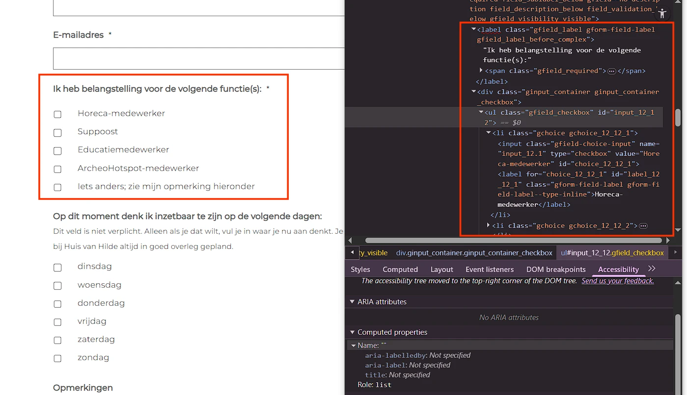
Op deze pagina staat onder de kop “Aanmelden” een formulier met groepen selectievakjes. Elke groep selectievakjes heeft een groepslabel, maar deze labels zijn niet programmatisch gekoppeld aan de respectieve groepen.
Hierdoor weten bezoekers die een schermlezer gebruiken niet dat er een relatie is tussen de groepslabels en de bijbehorende groepen.
#### Oplossing:
Zorg dat de groepslabels in de code expliciet gekoppeld zijn aan de groepen. Dit kun je bijvoorbeeld doen met `aria-labelledby` of door het formulier op de juiste manier te structureren met `fieldset`- en `legend`-elementen.
### Instructie bij invoerveld is niet altijd zichtbaar
Impact: GrootType: TechniekWCAG: 3.3.2
Op deze pagina staat onder de kop “Aanmelden” een formulier. Het invoerveld "Opmerkingen" heeft een bijbehorende instructie in de placeholdertekst. Deze instructie is echter niet permanent zichtbaar op de pagina; de placeholdertekst verdwijnt zodra de bezoeker begint te typen.
Oplossing:
Zorg dat instructies vooraf al zichtbaar en toegankelijk zijn voor alle bezoekers. Verplaats de instructie zodat deze permanent zichtbaar is in de buurt van het invoerveld.
#37 - Kleurcontrast van tekst is te laag (tekst kleiner dan 24px en niet vetgedrukt)
Impact: MediumType: ContentWCAG: 1.4.3
Op deze pagina staat onder de kop “Aanmelden” een formulier. Het invoerveld “Opmerkingen” bevat een instructie in placeholdertekst in lichtgrijs (#B1B1B1) op een witte achtergrond. De contrastverhouding is te laag: 2,1:1.
Oplossing:
Deze tekst is kleiner dan 24px en niet vetgedrukt, daarom moet het contrast minimaal 4,5:1 zijn. Op deze pagina staat een instructie die uitlegt hoe je kleurcontrast kan testen: https://properaccess.nl/hoe-test-ik-kleurcontrast/.
#38 - Links alleen in kleur te onderscheiden van gewone tekst
Impact: MediumType: TechniekWCAG: 1.4.1
Op deze pagina staat onder de kop “Aanmelden” een formulier. In dit formulier is een selectievakje “Ik ga akkoord met het privacybeleid.” met daarin een link “privacybeleid”. Deze link is alleen te herkennen aan een kleurverschil met de statische tekst. Dit kan een probleem zijn voor kleurenblinde of slechtziende bezoekers. Zij kunnen de kleuren mogelijk niet onderscheiden en zien dan niet dat er een link in de tekst staat.
Hetzelfde probleem doet zich voor op de pagina Scholen.
Oplossing:
Zorg ervoor dat links in de tekst op zijn minst op één andere manier te herkennen zijn die niet afhankelijk is van kleur. Bijvoorbeeld:
Onderstrepen: geef de links een onderstreping.
Rand: voeg een subtiele rand (kader) toe aan de links.
Verhoogd contrast + hover-effect: verhoog het contrast tussen de kleur van de links en de omringende tekst tot minimaal 3,0:1, en voeg een tweede visuele indicator toe bij hover, zoals een onderstreping of verandering in de achtergrondkleur.
#39 - CAPTCHA heeft maar één manier om vast te stellen of iemand een mens is en geen robot
Impact: MediumType: TechniekWCAG: 1.1.1
Op deze pagina staat een formulier met reCAPTCHA. Er wordt alleen een visuele test gebruikt om te verifiëren of iemand een mens is en geen robot. Dit is niet toegankelijk voor mensen die afhankelijk zijn van hulptechnologie. Het aanbieden van een tekstalternatief voor de afbeeldingen lost dit probleem niet op, omdat robots dit ook kunnen lezen.
Hetzelfde probleem doet zich voor op de pagina Scholen.
Oplossing:
Er zijn betere oplossingen:
Gebruik een CAPTCHA die meerdere zintuigen aanspreekt, zoals tekst én audio.
Voeg een tekstalternatief toe dat beschrijft wat het doel is van de CAPTCHA en hoe je een alternatieve CAPTCHA kunt vinden.
Het beste is om helemaal geen CAPTCHA te gebruiken en in plaats daarvan oplossingen te gebruiken die op de server draaien.
Lees meer over toegankelijke CAPTCHA:
G143: Providing a text alternative that describes the purpose of the CAPTCHA
G144: Ensuring that the Web Page contains another CAPTCHA serving the same purpose using a different modality
#40 - Toetsenbordfocus is niet zichtbaar
Impact: GrootType: TechniekWCAG: 2.4.7
Op deze pagina staat een formulier met een CAPTCHA. De toetsenbordfocus is niet zichtbaar op de afbeeldingen van de CAPTCHA. De toetsenbordfocus moet altijd zichtbaar zijn op interactieve elementen zoals links, knoppen en invoervelden die met het toetsenbord focus kunnen krijgen. Bezoekers die met het toetsenbord navigeren moeten namelijk goed kunnen zien waar ze zich op de pagina bevinden om interactieve elementen te kunnen bedienen.
Hetzelfde probleem doet zich voor op de pagina Scholen.
Oplossing:
Zorg dat de genoemde elementen een duidelijk zichtbare toetsenbordfocus-stijl hebben, door de standaard browserindicator te gebruiken of door zelf een stijl toe te voegen die aan de toegankelijkheidseisen voldoet (voldoende contrast, duidelijk te onderscheiden).
#41 - Er zit een tijdslimiet op de CAPTCHA
Impact: GrootType: TechniekWCAG: 2.2.1
Op deze pagina staat een formulier met de verificatiemethode CAPTCHA. Wanneer het selectievakje is aangevinkt maar de verzendknop nog niet is ingedrukt, verschijnt na enige tijd de melding "Verification expired. Please check the checkbox again." Er is dus een tijdslimiet aanwezig. Dit kan een probleem zijn voor bezoekers die meer tijd nodig hebben.
Hetzelfde probleem doet zich voor op de pagina Scholen.
Oplossing:
Zorg dat bezoekers de tijdslimiet kunnen uitzetten, aanpassen of verlengen.
#42 - Toegankelijke namen zijn in het Engels geschreven
Impact: KleinType: TechniekWCAG: 3.1.2
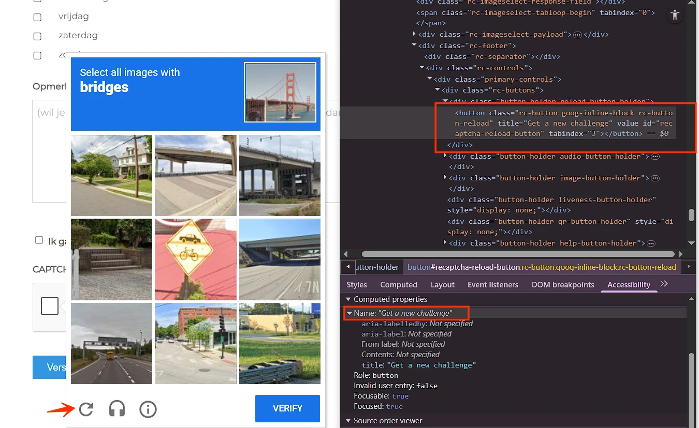
Op deze pagina staat een formulier met een CAPTCHA. Alle elementen in deze CAPTCHA zijn in het Engels, bijvoorbeeld “Get a new challenge”, “I'm not a robot” en andere. Deze teksten worden voorgelezen door schermlezers volgens de uitspraakregels van de primaire taal van de pagina (in dit geval Nederlands).
Hetzelfde probleem doet zich voor op de pagina Scholen.
#### Oplossing:
Vertaal de teksten naar het Nederlands, zodat ze correct worden uitgesproken door schermlezers, of geef eventueel met het lang-attribuut aan dat dit Engelse teksten zijn.
### Foutmelding is een instructie in plaats van een uitleg over de fout
Impact: MediumType: TechniekWCAG: 3.3.1
Op deze pagina verschijnt onder de kop “Aanmelden” in het formulier de melding “Dit veld is vereist”. Dit is een instructie, geen foutmelding. Een goede foutmelding maakt duidelijk dat er een fout is gemaakt en geeft aan waar de fout zit. Vaak staat er een ontkenning in. Een voorbeeld van een goede foutmelding is: "Het veld is niet (goed) ingevuld".
Hetzelfde probleem doet zich voor op de pagina Scholen.
Oplossing:
Pas de foutmelding aan, zodat de bezoeker weet wat er fout is.
#43 - Relatie tussen links in een groep is niet in HTML vastgelegd
Impact: MediumType: TechniekWCAG: 1.3.1
Op deze pagina staat onder “Publicaties Huis van Hilde” een groep PDF-links die visueel als groep worden weergegeven, maar deze groepering is niet terug te zien in de HTML-structuur.
Als het voor een ziende bezoeker duidelijk is dat een groep links bij elkaar hoort, dan moet die structuur ook in de HTML-code aanwezig zijn.
#44 - Er staan twee koppen van hetzelfde niveau direct onder elkaar
Impact: KleinType: ContentWCAG: 1.3.1
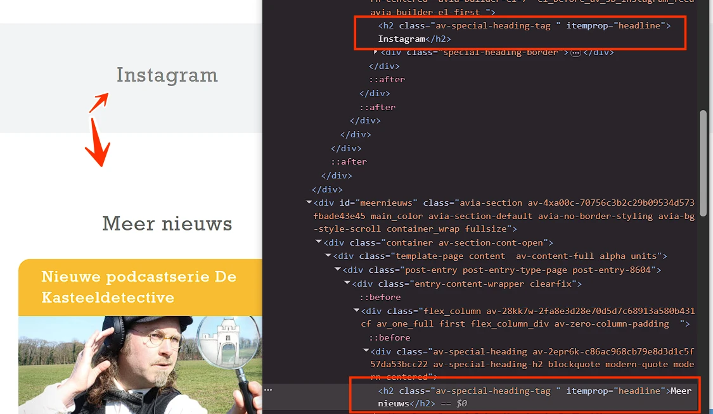
Op deze pagina volgt direct na een kop van niveau 2 een andere kop van hetzelfde niveau. Zie “Instagram” en “Meer nieuws”.
Als twee koppen van hetzelfde niveau direct onder elkaar staan zonder inhoud ertussen, dan is één van de koppen niet op de goede manier gebruikt. Direct onder het eerste `h3`-element mag een `h4`-element komen of andere content, maar niet nog een keer een `h3`-element of een `h2`-element.
#### Oplossing:
Pas de tekst aan, zodat de kopregelniveaus de structuur van de tekst correct weergeven. Op deze pagina staat een instructie hoe zelf koppen op een webpagina kan testen: https://properaccess.nl/zo-controleer-je-de-koppenstructuur-van-je-website/.
### Advies. Meerdere links naar hetzelfde doel
Op deze pagina staan artikelen. Elk artikel bestaat uit drie links naar dezelfde pagina. Dit zorgt voor veel herhaling van informatie en onnodige focuspunten.
#### Oplossing:
Combineer deze links tot één link.
#45 - Alternatieve tekst zorgt voor herhaling van tekst
Impact: KleinType: ContentWCAG: 1.1.1
Op deze pagina staat onder de kop “Toegankelijkheid” een afbeelding. Het tekstalternatief van de afbeelding, “toegankelijkheid”, is een herhaling van de koptekst.
Deze afbeeldingen dragen geen andere informatie over dan al in de kopteksten staat. Daarom kunnen ze als decoratief worden beschouwd.
Oplossing:
Laat het alt-attribuut leeg om herhaling van de tekst te voorkomen (alt=””).
#46 - SC 1.1.1 Informatieve afbeeldingen hebben geen alt-tekst
Impact: MediumType: ContentWCAG: 1.1.1
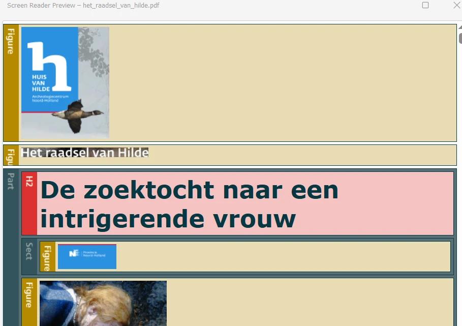
Dit pdf-document bevat op pagina 1 twee logo’s zonder tekstalternatieven (alt-tekst).
Afbeeldingen die met de `Figure`-tag zijn geplaatst, moeten altijd een beschrijving (alt-tekst) hebben. De `Figure`-tag is alleen bedoeld voor informatieve afbeeldingen. Schermlezers lezen de alt-tekst voor, zodat blinde bezoekers ook alle informatie tot zich kunnen nemen. Omdat de alternatieve tekst nu ontbreekt, lezen schermlezers alleen “afbeelding” voor. Blinde bezoekers kunnen hierdoor het gevoel krijgen dat ze inhoud missen.
#### Oplossing:
Voeg een tekstalternatief toe aan deze informatieve afbeeldingen.
### Kopteksten zijn niet als kop gemarkeerd
Impact: MediumType: ContentWCAG: 1.3.1
In dit pdf-document zijn meerdere kopteksten in de code niet als koppen opgemaakt. Zie bijvoorbeeld op pagina 1 “Het raadsel van Hilde” en op pagina 13 “[Beeldverantwoording]”.
Op deze manier verschilt de visuele informatiestructuur van de structuur van het document in de tags.
Oplossing:
Vervang de P-tag door de H-tag, zodat de tag-structuur gelijk is aan de visuele structuur.
#47 - Er is een afbeelding die tekst bevat
Impact: MediumType: ContentWCAG: 1.4.5
In dit pdf-document staat op pagina 1 een afbeelding met daarop de tekst “Het raadsel van Hilde”.
Een afbeelding met tekst erin is voor veel bezoekers ontoegankelijk. Het is beter om deze tekst als gewone tekst in het document te plaatsen. Dan kunnen mensen die slechtziend zijn de teksteigenschappen aanpassen, zodat het beter leesbaar is voor hen. Dat kan nu niet, omdat de tekst in een afbeelding staat.
Oplossing:
Zet de tekst die nu in de afbeelding staat als gewone tekst in het document.
#48 - Kleurcontrast van kleine tekst is te laag
Impact: MediumType: ContentWCAG: 1.4.3
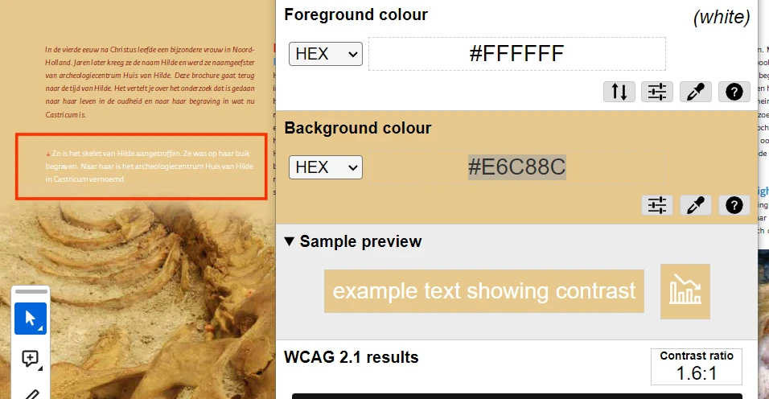
In dit pdf-document staat op alle pagina’s lichtblauwe tekst op een witte achtergrond. Bijvoorbeeld de paginanummers “2”, “3” enzovoort. De contrastverhouding is te laag: 3,7:1.
Op pagina 2 staat witte tekst op een lichtbruine achtergrond (#E6C88C). De contrastverhouding is te laag: 1,6:1.
#### Oplossing:
Zorg dat het contrast minimaal 4,5:1 is.
#49 - Structuur van pdf-document is niet in codes vastgelegd
Impact: MediumType: ContentWCAG: 1.3.1
Dit pdf-document mist tags, waardoor de inhoud ontoegankelijk is voor schermlezers.
Bovendien kunnen wij de pdf hierdoor niet volledig onderzoeken. Het gaat om alle succescriteria die met de pdf-codelaag te maken hebben, zoals semantische koppen en alternatieve teksten bij afbeeldingen. Als je dit oplost, is het dus mogelijk dat er nieuwe toegankelijkheidsproblemen ontstaan die nu nog niet aan het licht zijn gekomen.
Oplossing:
Voeg codes toe aan het document die de structuur van het document weergeven.
#50 - De taal is niet ingesteld in de metadata
Impact: MediumType: ContentWCAG: 3.1.1
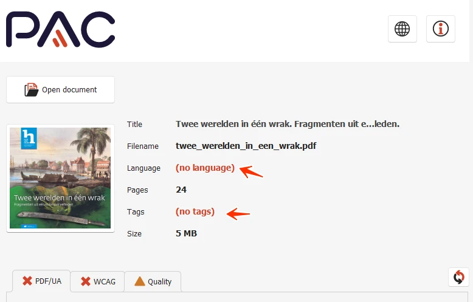
In de metadata van dit pdf-document is de taal niet ingesteld.
Het is belangrijk om de taal in te stellen. Dan kan hulpsoftware de informatie uit het bestand met de juiste uitspraakregels voorlezen.
#### Los het op in Adobe Acrobat:
Open het pdf-document in Adobe Acrobat.
Ga naar Bestand > Eigenschappen.
Ga naar het tabblad Geavanceerd.
Selecteer in het veld Taal de juiste taal voor het document, bijvoorbeeld Nederlands (Dutch).
Klik op OK en sla het bestand op.
#51 - Kleurcontrast van kleine tekst is te laag
Impact: MediumType: ContentWCAG: 1.4.3
In dit pdf-document staat op alle pagina’s lichtblauwe tekst op een witte achtergrond. Bijvoorbeeld de paginanummers “2”, “3” enzovoort. De contrastverhouding is te laag: 3,7:1.
Op pagina 10 staat een afbeelding van een kaart met witte tekst op een lichtblauwe achtergrond (#84CBE5). De contrastverhouding is te laag: 1,8:1.
Oplossing:
Zorg dat het contrast minimaal 4,5:1 is.
#52 - Kleurcontrast van informatieve lijnen is niet voldoende
Impact: MediumType: ContentWCAG: 1.4.11
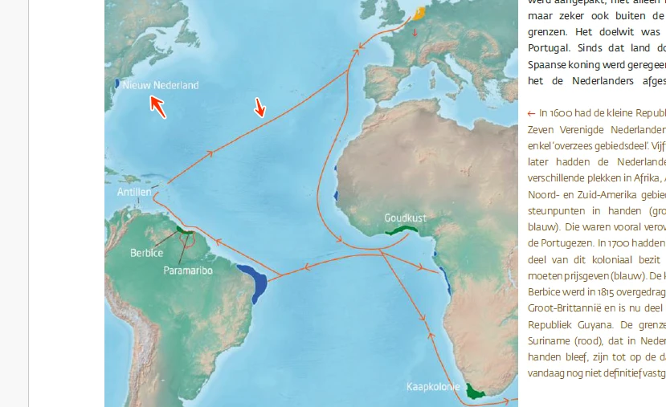
In dit pdf-document staat op pagina 10 een afbeelding van een kaart met rode pijlen (`#E45720`) op een lichtblauwe achtergrond (`#87CACE`). Het contrast is 2,0:1.
#### Oplossing:
Zorg dat het contrast tussen informatieve elementen van minimaal 3,0:1 is, zodat bezoekers ze van elkaar kunnen onderscheiden. Controleer of alle kleuren voldoende contrast hebben.
Op deze pagina is onder de tekst "Wettelijke taak" het em-element verkeerd gebruikt voor opmaakdoeleinden: “Gedeputeerde Staten houden een … verantwoord is”. Hetzelfde probleem doet zich verderop voor onder “Verdrag van Malta”. Het em-element heeft een semantische waarde: het geeft een bepaalde betekenis aan de tekst die erin staat. Dit element geeft aan dat de tekst extra nadruk moet krijgen. Om die reden mag dit element niet gebruikt worden om alleen een visueel effect (cursieve tekst) te bereiken.
Hetzelfde probleem doet zich voor op de pagina Scholen, in de secties met verborgen inhoud, bijvoorbeeld bij “Groep 3/4: Aak, Hilde en de rest”.
Oplossing:
Verwijder de onnodige em-elementen en gebruik CSS om de tekst schuingedrukt te maken.
#53 - Opsomming is niet opgebouwd met het HTML-element ul of ol
Impact: KleinType: ContentWCAG: 1.3.1
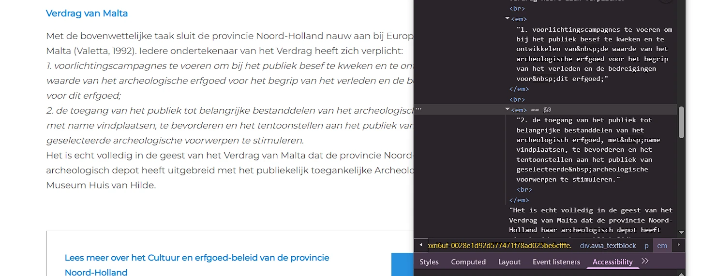
Op deze pagina staat onder de tekst "Verdrag van Malta" een lijst met 2 items, maar deze mist de juiste opmaak.
Tekst die eruitziet als een opsomming, moet ook zo in de code worden gemarkeerd. Je gebruikt voor lijsten en opsommingen de HTML-elementen `ol` (lijst met cijfers) of `ul` (lijst met bullets). Meestal is hier een knop voor in de content-editor van een CMS. Hulpsoftware weet dan hoe de tekst is gestructureerd. Bovendien kondigen schermlezers dan het aantal items in de lijst aan, voordat ze die gaan voorlezen. Zo weet een blinde bezoeker hoeveel informatie er nog komt. Meer over lijsten en waarom ze belangrijk zijn lees je op deze pagina https://properaccess.nl/waarom-correcte-html-lijsten-het-verschil-maken-in-toegankelijkheid/.
#### Oplossing:
Zorg dat alle opsommingen op de juiste manier in de code zijn gemarkeerd.
### SC 2.4.4 Linktekst is niet duidelijk genoeg
Impact: KleinType: ContentWCAG: 2.4.4
Op deze pagina bevat de link de vage tekst “Klik hier”. Deze tekst beschrijft de bestemming van de link niet voldoende en zorgt voor onduidelijkheid, vooral voor gebruikers met cognitieve beperkingen of bezoekers die afhankelijk zijn van schermlezers.
Linkteksten die meerdere keren op een pagina voorkomen of nietszeggend zijn (zoals “Klik hier”), geven de bezoeker geen duidelijke aanwijzingen over hun bestemming.
Oplossing:
Zorg dat duidelijk is waar een link naartoe leidt, bijvoorbeeld door een tekst als ‘lees meer’ aan te vullen met de paginatitel. Als visueel duidelijk is bij welk onderdeel de link hoort, kan deze aanvullende tekst visueel verborgen worden. Bijvoorbeeld: ‘lees meer (over het project)’ of ‘lees meer (in onze blog)’.
Op deze pagina staat in de kalender een link met een pijlpictogram, maar het tekstalternatief ontbreekt, waardoor de link ontoegankelijk is. De afbeelding is interactief, maar zonder tekstalternatief heeft de link geen inhoud.
Dit probleem hangt ook samen met SC 4.1.2, omdat deze link geen toegankelijke naam heeft, en met SC 2.4.4, omdat deze link geen doel heeft.
#### Oplossing:
Om deze link toegankelijk te maken, moet de afbeelding een tekstalternatief krijgen dat het linkdoel beschrijft. Zo weten bezoekers die schermlezers gebruiken waar de link naartoe leidt.
### Alleen kleur wordt gebruikt om informatie te geven
Impact: GrootType: TechniekWCAG: 1.4.1
Op deze pagina wordt in de kalender alleen kleur gebruikt om aan te geven welke datums beschikbaar zijn. Alleen als je kleuren kunt zien en van elkaar kunt onderscheiden, kun je begrijpen welke datum beschikbaar is.
Oplossing:
Gebruik naast kleur bijvoorbeeld ook verschillende soorten arcering.
#55 - Informatie wordt alleen visueel weergegeven
Impact: GrootType: TechniekWCAG: 1.3.1
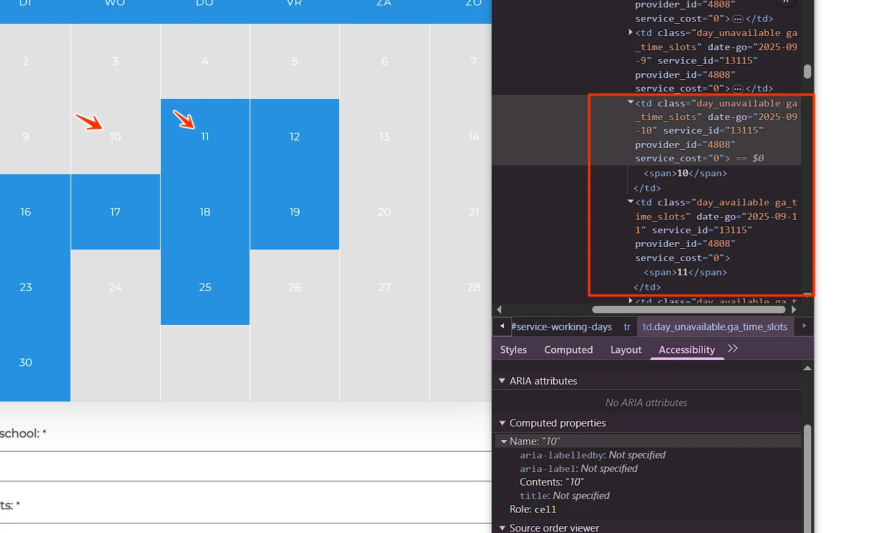
Op deze pagina staat een kalender. Informatie over beschikbare datums is alleen visueel aanwezig. Deze informatie is niet opgenomen in de HTML.
#### Oplossing:
Geef informatie over beschikbare en niet-beschikbare datums ook in de HTML, bijvoorbeeld door verborgen tekst te gebruiken.
### Knop heeft niet de juiste rol
Impact: GrootType: TechniekWCAG: 4.1.2
Op deze pagina staat een kalender met knoppen om beschikbare datums te boeken. Deze knoppen hebben niet de juiste rol. Hierdoor kan hulpsoftware niet aan gebruikers communiceren dat dit knoppen zijn.
Hetzelfde probleem doet zich voor bij de tijdknoppen nadat op een beschikbare datum is geklikt.
Elk HTML-element heeft standaard een rol. Dit betekent dat het element bepaalde eigenschappen en functies heeft om informatie aan de bezoeker te geven of om informatie van de bezoeker te ontvangen. De rol bepaalt dus wat het element doet. Schermlezers en andere hulpmiddelen moeten de correcte rol van elk element op een webpagina kennen. Zo kunnen ze op een slimme manier met het element omgaan en aan de bezoeker uitleggen wat het element doet.
Oplossing:
Zorg dat de knop de juiste toegankelijke rol heeft. Gebruik het button-element of eventueel het aria-attribuut “role”.
#56 - Toestand van de knop is niet vastgelegd in de code
Impact: GrootType: TechniekWCAG: 4.1.2
Op deze pagina staat een kalender met knoppen om beschikbare datums te selecteren. Nadat op een beschikbare datum is geklikt, verschijnen knoppen met tijden. Deze knoppen hebben meerdere toestanden (bijvoorbeeld ingedrukt, niet ingedrukt), maar missen een programmatische aanduiding van hun huidige toestand.
Hierdoor kan hulpsoftware deze informatie niet doorgeven. Blinde bezoekers weten daardoor niet wat de toestand is van de knop.
Oplossing:
Zorg dat de toestand van de knop ook in de code wordt weergegeven.
#57 - Interactieve elementen kunnen niet met het toetsenbord bediend worden
Impact: GrootType: TechniekWCAG: 2.1.1
Op deze pagina staat een kalender. Alle interactieve elementen van deze kalender zijn niet toegankelijk met het toetsenbord.
Oplossing:
Zorg dat alle interactieve elementen met de Enter-, Return- of spatietoetsen kunnen worden bediend.
#58 - SC 1.3.1 Relatie tussen links in een groep is niet in HTML vastgelegd
Impact: MediumType: TechniekWCAG: 1.3.1
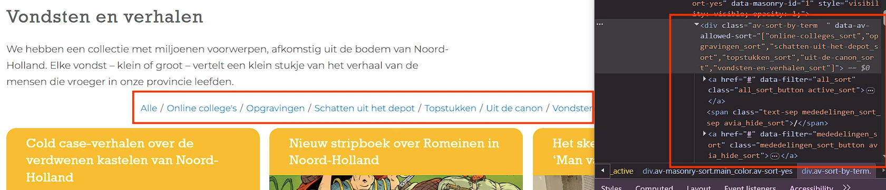
Op deze pagina staat onder de kop “Vondsten en verhalen” een groep links om artikelen te filteren. Deze links worden visueel als een groep weergegeven, maar deze groepering is niet terug te zien in de HTML-structuur.
Als het voor een ziende bezoeker duidelijk is dat een groep links bij elkaar hoort, dan moet die structuur ook in de HTML-code aanwezig zijn.
#### Oplossing:
Neem de elementen op in een `ul`- of `nav`-element.
### Zichtbare linktekst komt niet terug in toegankelijke naam
Impact: GrootType: TechniekWCAG: 2.5.3
Op deze pagina staan artikelen met links. De zichtbare tekst van deze artikelen is niet opgenomen in de toegankelijke namen van deze links. Bijvoorbeeld: de zichtbare tekst is “Cold case-verhalen over de verdwenen kastelen van Noord-Holland”, maar de toegankelijke naam van de link is “Afbeelding Podcast De Kasteeldetective”.
Als de zichtbare tekst van een link niet voorkomt in de toegankelijke naam, kan de link niet met spraakbediening worden bediend. De commando’s die de bezoeker uitspreekt door de tekst van de link voor te lezen, zullen de link dan niet activeren.
Oplossing:
Voeg de zichtbare tekst toe aan de toegankelijke naam, bij voorkeur vooraan.
#59 - SC 2.4.4 Betekenisloze linktekst
Impact: MediumType: ContentWCAG: 1.3.1
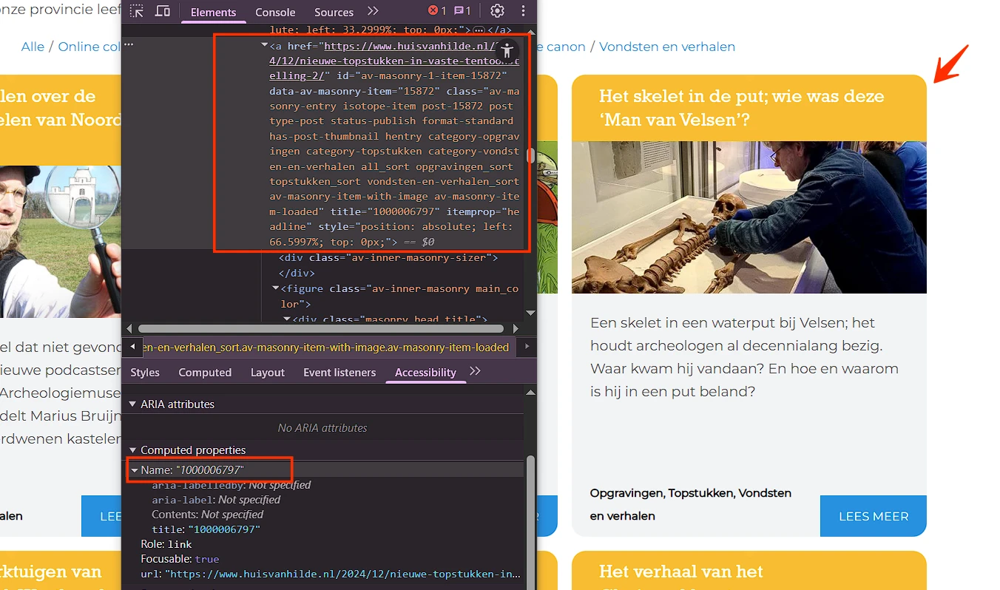
Op deze pagina staan artikelen met links. Deze links hebben een title-attribuut dat betekenisloze tekst bevat en dat als toegankelijke naam van de link wordt gebruikt. Bijvoorbeeld onder de kop “Het skelet in de put; wie was deze ‘Man van Velsen’?” is de title en toegankelijke naam van de link “1000006797”. Dit komt vaker voor. Het doel van de link is hierdoor onduidelijk. De tekst van links mag geen symbolen bevatten zoals streepjes en underscores. Deze karakters maken het doel van de link onduidelijk.
#### Oplossing:
Verwijder het title-attribuut of herschrijf de tekst. Zorg ervoor dat de toegankelijke naam van de link duidelijk en beschrijvend is.
### Bezoekers die inzoomen tot 400% kunnen niet meer alle tekst lezen
Impact: MediumType: TechniekWCAG: 1.4.10
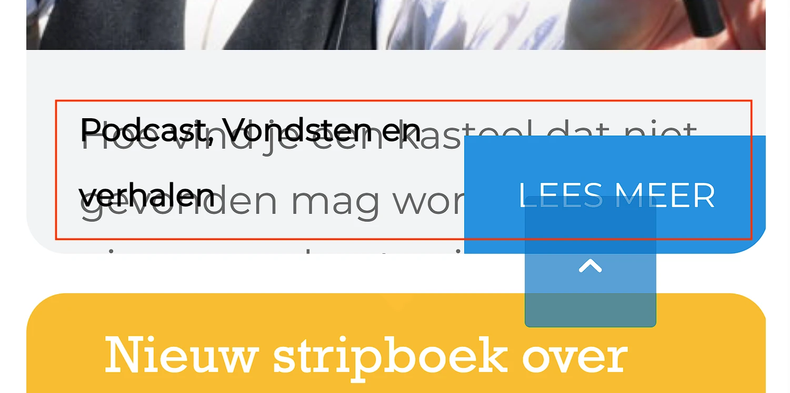
Wanneer deze pagina wordt bekeken met een schermresolutie van 1280 bij 1024 pixels en ingezoomd tot 400%, overlapt een deel van de tekst en gaat deze gedeeltelijk verloren, bijvoorbeeld onder de kop “Cold case-verhalen over de verdwenen kastelen van Noord-Holland”.
#### Oplossing:
Zorg dat alles nog werkt en leesbaar is als je inzoomt tot 400% op een scherm van 1280 bij 1024 pixels.
### Actieve element niet aangegeven in de code
Impact: GrootType: TechniekWCAG: 4.1.2
Op deze pagina staat onder de kop “Vondsten en verhalen” een groep links om artikelen te filteren. Als één van deze links wordt geactiveerd, worden de artikelen gefilterd. Het wordt niet in de code aangegeven dat deze filter dan actief is.
Oplossing:
Geef de actieve link een visueel verborgen tekst die aangeeft dat deze de actieve filter is of gebruik een aria-attribuut. Welk aria-attribuut passend is, hangt af van de rol die deze set links krijgt. Nog beter zou het zijn als ook visueel wordt aangegeven welke filter actief is, maar voor de toegankelijkheid is het ook juist belangrijk dat dit ook in de code wordt aangegeven.
Op deze pagina staat onder de kop “Nieuwe zoekopdracht” een knop met een vergrootglaspictogram. Deze knop heeft geen toegankelijke naam. Hierdoor begrijpen bezoekers die een schermlezer gebruiken niet wat de bestemming of de functie is van de knop.
Er is geprobeerd een toegankelijke naam toe te voegen met het title-attribuut, maar dit is geen betrouwbare methode.
#### Oplossing:
Voorzie deze knop van een toegankelijke naam, bijvoorbeeld door een beschrijvende knoptekst te gebruiken, een aria-label toe te voegen of een andere geschikte techniek toe te passen.
### Onvoldoende linktekst in paginering
Impact: MediumType: TechniekWCAG: 2.4.4
Op deze pagina missen de pagineringslinks voldoende context. Voor ziende gebruikers is het duidelijk dat "1", "2", "3", enzovoort paginanummers voorstellen, maar dit is niet duidelijk voor gebruikers met een visuele beperking of voor mensen die een schermlezer gebruiken.
Oplossing:
Je verbetert dit door de linkteksten aan te vullen met het (visueel verborgen) woord "pagina”.
#61 - Huidige pagina in paginering is alleen visueel aangegeven, maar niet in de code
Impact: MediumType: TechniekWCAG: 1.3.1
Op deze pagina wordt bij de paginering onder de zoekresultaten visueel het huidige paginanummer aangegeven, maar dit onderscheid is niet aanwezig in de HTML-code.
Hierdoor kan een schermlezer deze informatie niet doorgeven aan de bezoeker.
Oplossing:
Je maakt de informatie toegankelijk door:
Verborgen tekst: voeg visueel verborgen tekst toe binnen de link van de huidige pagina die aangeeft dat dit de huidige pagina is. Bijvoorbeeld <span class=”sr-only”>Huidige pagina</span>.
aria-current-attribuut: voeg aria-current=”page” toe aan het a-element van de link van de huidige pagina.
Op deze pagina is onder de kop “Reis door de geschiedenis in één zomer!” het strong-element verkeerd gebruikt voor opmaakdoeleinden. Hele zinnen zijn in een strong-element geplaatst om ze vet te maken, bijvoorbeeld “Leer boogschieten als … het hele gezin”. Het strong-element heeft een semantische waarde: het geeft een bepaalde betekenis aan de tekst die erin staat. Dit element geeft aan dat de tekst extra nadruk moet krijgen. Om die reden mag dit element niet gebruikt worden om alleen een visueel effect (vetgedrukte tekst) te bereiken.
Hetzelfde probleem doet zich voor op de pagina Cold Case: verhalen over de verdwenen kastelen van Noord-Holland, bijvoorbeeld bij “Hoe vind je … van Noord-Holland.”
Oplossing:
Verwijder de onnodige strong-elementen en gebruik CSS om de tekst vet te maken.
#62 - Links alleen visueel te onderscheiden van gewone tekst
Impact: MediumType: TechniekWCAG: 1.4.1
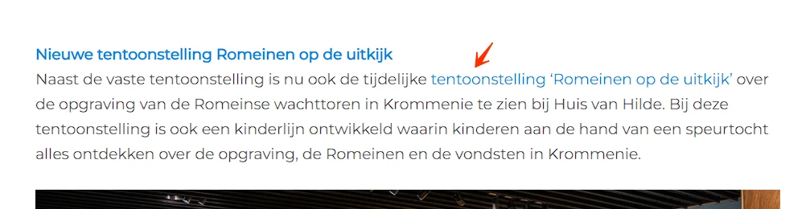
Op deze pagina staat onder de koppen “Nieuwe tentoonstelling Romeinen op de uitkijk” en “Meer informatie” een alinea met de links “tentoonstelling ‘Romeinen op de uitkijk’” en “agenda”. Het enige verschil tussen de link en de gewone tekst in dat ze een andere kleur hebben. Deze links zijn dus alleen te herkennen aan een kleurverschil met de statische tekst. Dit kan een probleem zijn voor kleurenblinde of slechtziende bezoekers. Zij kunnen de kleuren mogelijk niet onderscheiden en zien dan niet dat er een link in de tekst staat.
Hetzelfde probleem doet zich voor op de pagina Provincie Noord-Holland – Huis van Hilde, bijvoorbeeld bij “archeologisch depot Noord-Holland”; op de pagina Scholen, bijvoorbeeld bij “ArcheoLab”; op de pagina Engels, bijvoorbeeld bij “school holidays in the North region”; en op andere pagina’s.
#### Oplossing:
Zorg ervoor dat links in de tekst op zijn minst op één andere manier te herkennen zijn die niet afhankelijk is van kleur. Bijvoorbeeld:
Onderstrepen: geef de links een onderstreping.
Rand: voeg een subtiele rand (kader) toe aan de links.
Verhoogd contrast + hover-effect: verhoog het contrast tussen de kleur van de links en de omringende tekst tot minimaal 3,0:1, en voeg een tweede visuele indicator toe bij hover, zoals een onderstreping of verandering in de achtergrondkleur.
#63 - Goed tekstalternatief bij een complexe afbeelding ontbreekt
Op deze pagina staat onder de tekst “Meer informatie” een link met een complexe afbeelding zonder tekstalternatief. Complexe afbeeldingen zoals infographics en schema’s bevatten veel informatie die niet binnen de 150 tekens van de alternatieve tekst past. Die informatie maak je toegankelijk door twee tekstalternatieven te bieden: een korte en een lange beschrijving.
Dit probleem hangt ook samen met SC 4.1.2, omdat deze link geen toegankelijke naam heeft; met SC 2.4.4, omdat deze link geen doel heeft; en met SC 2.5.3, omdat bezoekers geen spraakbesturing kunnen gebruiken.
Oplossing:
De korte beschrijving, meestal de alternatieve tekst, moet de locatie van de lange beschrijving aangeven. De lange beschrijving kun je als tekst op de pagina zelf plaatsen, maar deze mag ook op een andere pagina of in een downloadbaar bestand staan.
Over dit onderzoek
Leeswijzer
Onze rapporten zijn anders. Bij het bespreken van de gevonden problemen volgen wij niet de structuur van de norm, maar die van jouw website of app. Hierdoor kun je gewoon per pagina of scherm aan de slag gaan. Wel zo makkelijk! Je vindt verderop een overzicht van alle pagina’s met problemen.
We geven je bij elk gevonden issue een paar voorbeelden, maar niet een complete lijst. Controleer zelf of het probleem ook nog op andere plekken voorkomt. Zie het rapport als een leidraad.
Gebruikte norm
Dit onderzoek laat zien in hoeverre de website op dit moment voldoet aan WCAG 2.2, niveau A en AA. WCAG staat voor Web Content Accessibility Guidelines. Dit is de internationale norm voor digitale toegankelijkheid. De Europese norm EN 301 549 bevat alle eisen van WCAG op niveau A en AA.
In dit rapport hebben we korte beschrijvingen van de succescriteria uit de norm opgenomen, met een algemene uitleg erbij. Wil je ze helemaal lezen? Bekijk dan de documentatie van WCAG.
Gebruikte onderzoeksmethode
We gebruiken de onderzoeksmethode WCAG-EM van het W3C. Het proces ziet er als volgt uit:
vaststellen wat binnen en buiten scope valt
vaststellen welke technologieën zijn gebruikt
steekproef (sample) samenstellen
steekproef onderzoeken
gevonden issues beschrijven
Het grootste deel van het onderzoek doen we met de hand. Voor een deel van de toegankelijkheidseisen gebruiken we automatische tools als ondersteuning, zoals axe-core en Chrome Developer Tools.
Belangrijk om te weten
Dit rapport helpt je om de toegankelijkheid van je website te verbeteren. Maar let op: het is geen definitieve, volledige lijst van alle aanwezige toegankelijkheidsproblemen. Dat zit zo:
Het is een steekproef
Ten eerste is het onderzoek gebaseerd op een steekproef. Die is op een betrouwbare manier genomen, en de meeste problemen zullen daardoor zeker aan het licht komen. Toch kan een probleem net buiten de steekproef vallen. Bij een volgend onderzoek kan het wel ontdekt worden.
Op basis van falsificatie
We beoordelen vanuit het principe van falsificatie. Dat houdt in dat we proberen te bewijzen dat iets niet waar is, in plaats van te bevestigen dat het klopt. ‘Voldoet’ betekent daarom dat we geen reden hebben gevonden om een punt af te keuren. Maar als we later wél een reden vinden, kan het alsnog worden afgekeurd.
Voortschrijdend inzicht
Het komt voor dat de beoordeling van een succescriterium op detailniveau verandert. De norm beschrijft namelijk niet élk mogelijk scenario. Samen met andere onderzoeksbureaus overleggen we hoe we met bepaalde situaties omgaan. Zo kan iets dat nu wordt afgekeurd, soms bij een volgend onderzoek worden goedgekeurd en andersom.
Oplossen leidt tot nieuw probleem
Ten slotte kan het gebeuren dat bij het oplossen van een probleem onbedoeld een nieuw toegankelijkheidsprobleem ontstaat. Dat komt dan bij een volgend onderzoek pas naar voren.
Hoe werkt dit rapport?
Bevindingen bekijken en filteren
Alle gevonden toegankelijkheidsproblemen staan onder Gevonden problemen. Je kunt de bevindingen filteren op:
Impact (Groot, Medium, Klein, Advies) — hoe ernstig is het probleem voor de gebruiker?
Type (Content, Techniek) — moet de inhoud of de techniek worden aangepast?
Status (Open, Opgelost) — welke problemen zijn al verholpen?
Voortgang bijhouden
Je kunt je voortgang op twee manieren bijhouden:
CSV-export — exporteer alle bevindingen als CSV-bestand en laad het in een (online) spreadsheet om met je team samen te werken.
Jira-export — exporteer alle bevindingen als Jira-compatibel CSV-bestand. Importeer het via Jira > Issues > Import issues from CSV. Bevindingen worden aangemaakt als bugs met prioriteit op basis van impact.
Registreer in de browser — activeer deze optie om per bevinding bij te houden of het is opgelost. Je voortgang wordt opgeslagen in je browser. Niemand anders kan je resultaat zien. Let op: de voortgang is gekoppeld aan je browser. Als je een andere browser of een ander apparaat gebruikt, begint de telling opnieuw.
Plan van aanpak — download een geprioriteerd plan van aanpak om de gevonden problemen stap voor stap op te lossen. Dit is beschikbaar bij audits vanaf maart 2026.
Link naar een specifieke bevinding delen
Bij elke bevinding verschijnt een link-icoon wanneer je er met de muis overheen gaat. Klik op dit icoon om de directe link naar die bevinding te kopiëren. Je kunt deze link plakken in een e-mail of chatbericht, bijvoorbeeld om een vraag te stellen aan Proper Access over een specifiek punt.